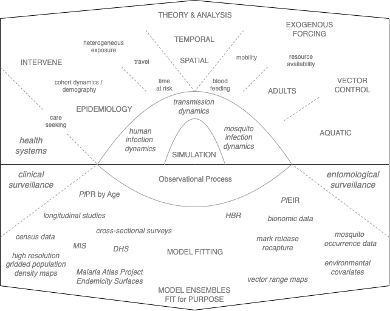
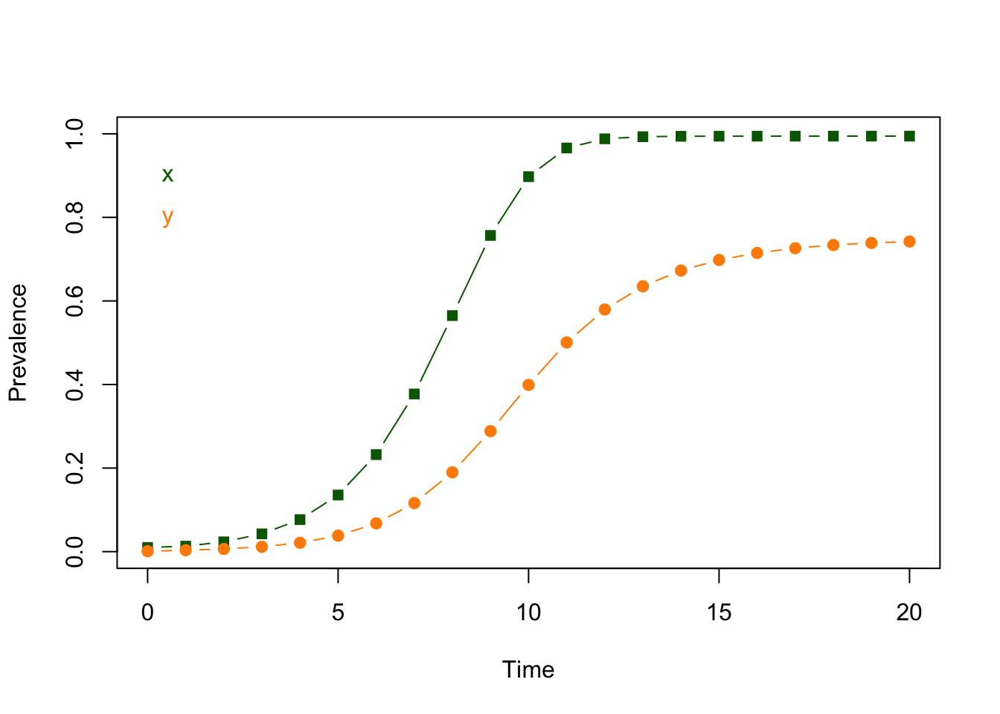
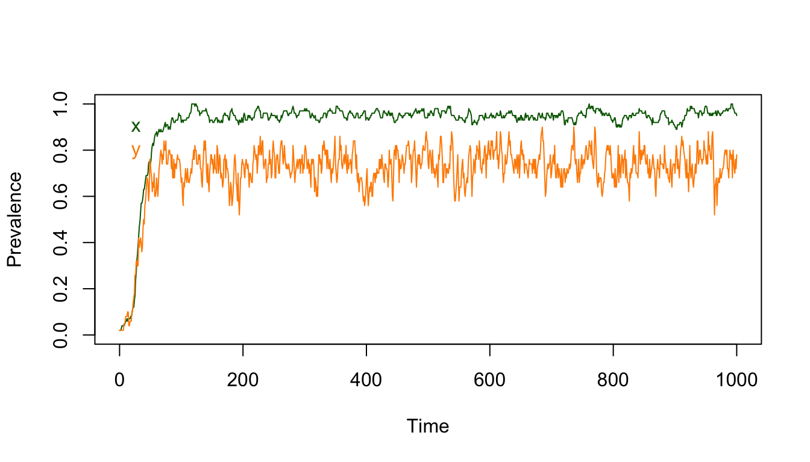
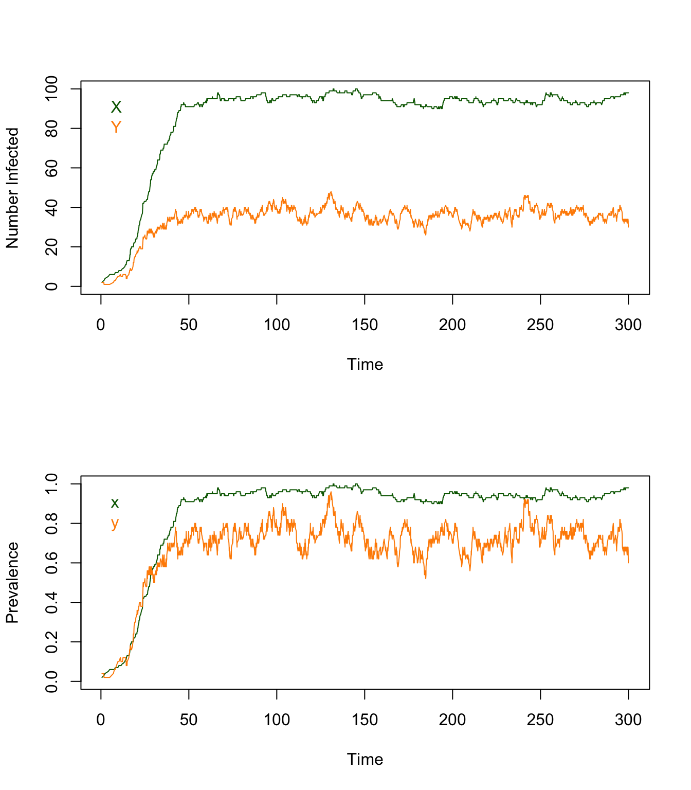
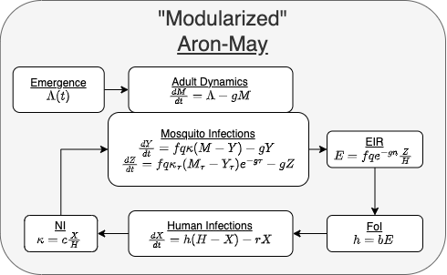

Foreword
A large fraction of my time over the past 25 years has been devoted to learning about malaria and mathematical models of malaria epidemiology, transmission dynamics, mosquito ecology, malaria control, and the evolution of drug and insecticide resistance.
While I was building and analyzing models, I was looking for a way of organizing, synthesizing, operationalizing, and applying the rich body of theory developed over more than a century of malaria research.
Malaria was a name for a disease associated with recurring fevers. Starting around 1660, malaria was treated with a tea made from the bark of the Cinchona tree.
In 1824, the drug quinine was isolated and used to treat malaria.
Later in the 19th century, Charles Laveran and Ronald Ross identified the cause of malaria and its mode of transmission
[1,2].
In the 1900s, Ross developed the first mathematical models of malaria transmission to help with planning for the prevention of malaria.
In the early 1950s, George Macdonald’s updated Ross’s mathematical theory and published a quantitative synthesis of malaria epidemiology and control.
Some of the weaknesses of Macdonald’s model were exposed in field trials in the late 1960s. Many of these were addressed when Klaus Dietz and his colleagues published a new malaria model, in the 1970s, that was field tested in The Garki Project.
In the 1980s, Dietz developed models describing seasonality, treatment with anti-malarial drugs, and heterogeneous transmission.
Mathematical models of malaria and other infectious diseases were taken up by departments of ecology, leading to new and innovative approaches [3].
In the 1990s, within-host malaria models were developed [4].
The mathematical theory developed for malaria epidemiology and transmission dynamics was incorporated into comprehensive individual-based malaria models (IBMs) developed at the Swiss Tropical Public Health Institute (2006), Imperial College (2010), and the Institute for Disease Modeling (2013).
IBMs had solved one of the core challenges of using models for malaria policy – a practical way of dealing with the complexity of malaria. While these IBMs represented an important advance, I had some lingering questions about the relationship between exposure, immunity, age, and disease; the spatial scales that characterized malaria transmission [5]; and the stability of malaria elimination [6,7]. I started developing my own framework for individual-based simulation. Sean L. Wu and I developed an IBM, called MBITES, that could simulate adult mosquito ecology and behavior in exquisite detail [8]. As we attempted to connect MBITES to models of human infection and immunity, I confronted the heavy computational load associated with using MBITES to simulate mosquito blood feeding at an individual level.
I was looking for a way of translating evidence into policy that was powerful enough to handle the complexity of malaria and yet deal with the uncertainty. I was also hoping to identify a way of taming the complexity through identification of relevant detail [9]. Despite the advantages of IBMs, I realized they might not be the tool I was looking for.
I shifted gears and started working towards a mathematical and computational framework that was not an individual-based simulation model [3,10].
I wanted a way of building models to support adaptive malaria control.
Since malaria is so complex and locally peculiar, a core part of adaptive malaria control is using mathematical models for simulation-based analytics through iterative policy engagement.
Over time, malaria programs adapt by identifying key knowledge gaps and modifying surveillance, monitoring and evaluation activities to fill those gaps.
We wanted to give advice that was robust to uncertainty; analytics are robust if they characterize, quantify, and propagate uncertainty.
We needed a mathematical framework for model building that was up to the task of analyzing malaria transmission dynamics and control in situ, all while quantifying and propagating uncertainty.
Over time, we developed a bespoke inferential framework called robust analytics for malaria policy (RAMP):
I thus thus set out to develop a nimble mathematical and computational framework for model building. To support RAMP and adaptive malaria control, the framework should be extensible, with a plug-and-play modular design;
it should make it easy to swap out base models describing the core dynamics, and but it would also include flexibility in the choice of functional forms describing forcing and core processes.
To get malaria transmission right, we would need to be able to deal with heterogeneity of all sorts.
The framework should be structurally flexible, so that a model could incorporate space, time, and human population strata to deal with demography and population heterogeneity.
It should have scalability to handle realism and complexity: it should be possible to scale down spatial granularity for fine-grained spatial simulations [11–13], to scale down temporally for fine-grained temporal simulations [8], or to scale up to understand or analyze regional processes and the emerging patterns [14].
To serve the needs of malaria programs, a framework would need built-in support for exogenous forcing by weather and vector control to model malaria as a changing baseline modified by control.
To get integrated vector control right, we went all-in with an individual-based simulation model for mosquito ecology and behavior (called MBITES) that could handle exquisite biological detail [8].
MBITES was inspirational but impractical, so we revisited models to incorporate new ideas about mosquito search and behaviors.
To serve programmatic needs, we developed algorithms and theory with skill sets that included the durability of interventions – the waning potency of insecticides or decaying coverage –
and the net effect of one unit of vector control in relation to transmission intensity and coverage.
To make all the pieces fit together, we needed interfaces that could connect up models in a generic way; in the design phase, we worked with two model families for each major dynamical component – one that was dead simple, and one that had a was highly realistic.
In some cases, the interface designs called for development of new algorithms: blood feeding, egg laying, environmental heterogeneity, human mobility, and mosquito dispersal.
In making a master list to test the framework’s extensibility, we found that some odd cases that needed to pass information among components – endectocides and auto-disseminated larvicides – but it was easy enough to accommodate these.
Beyond the algorithms, these models needed the support of mathematical theory.
We wanted to understand thresholds so we wrote the routines that would compute thresholds for malaria transmission in heterogeneous systems, when appropriate.
Sometime in the fall of 2022, the last few pieces came together. In collaboration with Uganda’s National Malaria Control Division (NMCD) and the Bioko Island Malaria Elimination Program (BIMEP), we have now developed a malaria policy framework that we call adaptive malaria control. We published the first versions of MicroMoB and exDE at CRAN.
We submitted a paper to PLoS Computational Biology [15]. A second paper forced us to confront a set of software design questions in relation to exogenous forcing [Add the citation here when it is published]. Meanwhile, we decided to rebrand exDE as ramp.xde for (ordinary and delay differential equations). We redesigned MicroMoB to catch up to ramp.xde, and rebranded it as ramp.dts (for discrete time systems).
After all that, it was time to write this book.
This book was written as a primer for anyone who wants to build and analyze mathematical models of malaria.
In the chapters on Basic Malaria Models and The Ross-Macdonald Model, we write code in the text. The book is freely available, and it is possible to download the markdown files from github and use the code in RStudio.
After the first few chapters, the examples in the book use ramp.xde and ramp.dts, two software packages written for R that are designed for scalable and nimble model building.
We use the software because it lowers the costs of building and implementing models that are up to the task of guiding malaria policy.
An advantage of using this framework and accompanying software is that it has solved the technical problems that often arise when building models that combine many factors.
These sorts of pitfalls are inevitable and annoying, and they are usually discovered the hard way.
We found design solutions that would help others building models to avoid these sorts of problems.
The framework and software took longer to develop than expected, in part, because there were more pitfalls than we had anticipated, and because we found most of them the hard way.
For those who are not interested in using the software, the book covers most of the mathematical models and theory developed for malaria over the past century.
This book has been written to introduce the major concepts in the mathematical study of malaria transmission dynamics and control using the core features of the mathematical framework and the software (see Figure 1.1). Behind the scenes, the work was being done in a private githubr repository, the RAMP-Model-Library, which was set up during the primary design phase. The RAMP-Model-Library is where we made all our design mistakes: was the software truly plug-and-play, and was the framework truly extensible? As the primary design phase came to a close, the library that was once the laboratory became a classroom and a museum. Over time elements of library are being transformed into vignettes, the models are being added to publicly available code, and the ideas are being published in papers. The whole project is a resource for any developer who wants to add new base models or functionality. Most of all, all this is being set up for the end user, someone in a malaria program or working with a malaria program who wants to use simulation based analytics to analyze policies. This book is structured into a set of lessons that teach concepts. Some of the concepts build on one another, and others take on new challenges. We combine these lessons into some examples where we show some algorithms to build models fit for purpose. When a topic deserves a deeper dive, we have supplemented this book with vignettes or lessons.

A schematic diagram of the elements in the framework (top half) and the process of model building and model fitting (bottom half)
This book shows, through examples, how to use the software to build malaria models.
Even without the software, it fills a gap for students who have taken an introduction to mathematical epidemiology or infectious disease modeling and want to go on in malaria.
What are all the special topics that would need to be covered to build models that could be needed in malaria?
This book could be the basis for such a course, if there were ever enough students.
Since there will probably never be enough graduate students at my university who are interested in applied malaria dynamics, the material is being developed for any student anywhere.
I will also be writing and recording some short lectures on a subset of topics.
The premise of this book is thus that the reader has started with a solid background in infectious disease models and malaria. We assume they’ve seen the Ross-Macdonald model before, that they’ve taken a class in mathematical epidemiology, and that they know something about how to construct and analyze models. This book emphasizes concepts and teaches through examples. We have left out a lot of the technical and mathemtical details, but we have written some vignettes and lessons to supplement the book. Most of this is found in the documentation for ramp.xde or ramp.dts or one of the supporting libraries.
While this book should help others build models for malaria policy, but it stops short of applying models to policy. That is covered in another book, Robust Analytics for Malaria Policy.
In doing all this, we are building on an enormous body of work that started with Ronald Ross. While Ross is better known for identifying malaria parasites in a mosquito gut, which proved that malaria is mosquito transmitted, we are more interested in the rest of his career.
After winning the Nobel Prize in 1902, Ross was instrumental in building solid quantitative foundations for malaria transmission and its measurement. Ronald Ross wrote the first models describing malaria transmission. In his writings from 1899 to 1911, it’s clear that he was searching for quantitative way of saying something simple – if there are not enough mosquitoes, the malaria transmission can’t be sustained. There must be a critical mosquito density, above the cutoff malaria transmission would be sustained, and below it malaria would be eliminated. Ross was looking for a formula that encapsulated his intuition: how were thresholds related to the fact that it took two bites for a mosquito to complete its life cycle? Eventually, Ross wrote down some systems of equations that would describe malaria. The ideas, mathematics, and identification of parameters and processes were extended by other scientists later, most notably Alfred Lotka and George Macdonald.
It seems that the challenge of malaria control was what pushed Ross toward modeling. Ross’s first model was a discussion of adult mosquito movement to guide larval source management [16]. The first model describing malaria transmission appeared in a book, The Prevention of Malaria in Mauritius [17]. When it came to thinking through control, Ross found it useful to do the math. More than a century later, this book is a look at what his vision has become.
–David L. Smith
Contributors
I’ve done the primary writing for this book. The framework would not exist without the work of Sean L Wu and a few others. The book borrows from the work of others, and we have done our best to give credit through citations. It has been a collaborative process (see Contributors). The errors, however, are mostly mine. If you find mistakes or have questions, please drop me a note by email: smitdave@gmail.com.
This is a work in progress, so the list of contributors will change over time.
The software package MicroMoB was written by Sean L Wu, Sophie Liebkind, and David L Smith. The software package exDE was written by Sean L Wu and David L Smith.
Most of the content so far was written by David L Smith. Contributors from the RAMP Team include:
…please consult Dave if you would like a writing role.
The Prevention of Malaria
Ronald Ross is best known for being the first person to observe malaria parasites in a mosquito [18]. The event – on August 20\(^{th}\), 1897 in a military hospital in Hyderabad, India – is now celebrated as mosquito day.
In the months that followed, Ross made the case that mosquitoes transmit malaria parasites [19].
Concurrently, the life-cycle of human malaria parasites was described by an Italian team, led by Giovanni Battista Grassi [20,21].
By 1899, a scientific consensus had formed among malaria experts that malaria was a mosquito-transmitted disease.
It would take some time before the “mosquito hypothesis” was accepted more broadly.
The discoveries made by Ross and Battista Grassi closed a loop that Charles Laveran had opened in 1880 when he identified malaria parasites in blood, providing the first clear evidence that human malaria was a parasitic disease [22,23].
Laveran’s observation had spawned almost two decades of research describing malaria infections and disease in humans, all before the mode of transmission was known [24].
The modern view of the parasite life-cycle was not complete until the 1940s, through research describing the parasite’s liver stages by Garnham and colleagues [24,25].
Malaria is a disease that could be treated and measured before anyone knew what caused it or how it was transmitted.
Malaria was commonly treated with quinine once the compound had been isolated in 1824.
The chemical compound was isolated from the bark of Cinchona tree, which had been used to treat malaria fevers.
The spleen rate, a reasonable metric for malaria was described by Dempster in 1948 [26].
All of this occurred before Laveran showed how that malaria was caused by infection with a parasite.
The elements of the story of malaria, including a full account of
how the malaria parasite’s life cycle was unravelled over time is a topic that worth taking some time to learn [24,27–29].
Knowing the mode of transmission, the British military launched vector control efforts to protect British citizens from malaria in its colonial empire.
At the time, vector control with bed nets and larval source management, and malaria was treated with quinine.
Lest we imagine malaria control in this era was for general humanitarian purposes, Ross emphasizes population segregation as a useful mode of malaria control for the colonizers.
Both Ross and Laveran were military doctors supporting colonial governments, a fact that we acknowledge that we can neither ignore nor excuse.
We try to learn enough history to avoid repeating the same mistakes.
We are sure to make enough mistakes of our own as we blunder forward.
In this first epoch of malaria control, it is Ross who once again draws our attention.
After his big discovery, Ross turned his attention to malaria control. In 1910,
he published a book, The Prevention of Malaria. A second second edition followed in 1911.
Ross’s work on malaria prevention is of interest because he laid out a vision for a quantitative approach to the prevention of malaria.
He clearly articulated how malaria control needed quantitative concepts, including well-developed metrics to measure malaria in populations.
Ross himself developed the thick film, a technique that was intended to increase the sensitivity of malaria diagnostics [30,31].
In the service of understanding malaria for purposes of control, Ross developed the first mathematical models for malaria, in which he addressed basic questions about larval source management [16] and malaria transmission [1,17,32].
In the second decade of malaria control, the last phase of Ross’s career, he formed an alliance with Hilda Hudson, a mathematics professor from Cambridge University. Between 1915 and 1917, Ross and Hudson developed mathematical theory to support the study of epidemics, which they called a priori pathometry. Then, in 1921, Martini developed a model describing the dynamics of infections that immunized their hosts. In 1927, Kermack and McKendrick published the first of a five-part series on the mathematical theory of epidemics that described the dynamics of acute immunizing infections, which overshadowed the work by Ross and Hudson. Nowadays, the field is called mathematical epidemiology.
The parasite’s life-cycle has been an organizing principle for the study of malaria.
The discoveries by Laveran, Ross, Battista Grassi, Garnham and others set the stage for hundreds of thousands of studies over 144 years (at the time of this writing) that have developed a rich and impressive body of knowledge.
Over that time, we have learned an enormous amount about malaria and its control.
The first comprehensive review of malaria, Malariology. A Comprehensive Survey of all Aspects of this Group of Diseases from a Global Standpoint, was published in 1949 in a two volume set edited by Mark F. Boyd with
70 chapters and 1643 pages from 65 contributors [33].
Almost 40 year later, 1988, the second comprehensive review of malaria was published in another two volume set, Malaria: Principles and Practice of Malariology,
edited by Walter H Wernsdorfer and Sir Ian McGregor; this set had 57 chapters and 1818 pages from 68 contributors, [34].
Another 40 years has passed, and it is almost time for an update.
This book is a primer on mathematical models to support robust analytics for malaria policy (RAMP).
It covers malaria epidemiology, mosquito ecology, human demography, and malaria transmission dynamics and control with a focus on the mathematical theory and models that have been developed over the past century.
While this book will cover many of the topics in those two-volume sets, it is focused more narrowly on introducing the mathematical study of malaria that started with Ross.
The field made some great leaps forward in the 1950s, when Macdonald wrote a series of papers that reviewed decades of field studies and updated Ross’s basic models.
Macdonald’s paper on the sporozoite transformed the quantitative study of malaria transmission by mosquitoes, drawing attention to the importance of mosquito survival.
In his next paper, Macdonald presented a formula for the basic reproductive number for malaria, an idea that almost certainly traces back to Alfred Lotka’s work in human demography.
Macdonald would have known Lotka from his extensive work on Ross’s models of malaria.
The simple mathematical models, now called the Ross-Macdonald model, thus defined basic theory for malaria transmission dynamics and control [2].
This book starts with the Ross-Macdonald model, and it covers a rich and wonderful set of models that has grown out of it.
Around 1970, the mathematical study of malaria entered a period of elaboration through the work of Klaus Dietz, Norman TJ Bailey, Joan Aron, Barbara Hellriegel, and others.
Ross was a pioneer in a field that has included important contributions by hundreds of scientists and analysts.
Nowadays, we can describe malaria as a managed, complex adaptive system involving non-linear interactions among mosquitoes, parasites, humans, and the managers. Malaria systems are heterogeneous and locally peculiar in some way: doing the same thing in different places can result in different outcomes. To understand why outcomes of malaria control vary, we need good theory for malaria, including malaria transmission intensity and seasonality, mosquito ecology and behaviors, mosquito and parasite genetics, health systems, and human behaviors. To give advice, we need malaria intelligence – information about these critical factors, and since the systems are peculiar, we will need local information to give tailored advice. We must grapple with questions about malaria that remain poorly understood, and we most offer advice even if there are enormous gaps in data and knowledge. We want to give policy advice that is robust to uncertainty. We will need well organized systems to store and analyze data and to develop intelligence that can help us learn and adapt. In all of these activities, mathematical models of malaria transmission dynamics and control play an important role.
In this book, Applied Malaria Dynamics: Theory and Computation for Robust Analytics and Adaptive Malaria Control, we take a deep dive into dynamical systems models for malaria epidemiology, transmission dynamics, and control. It is designed to serve as an introduction and resource for malaria analysts who seek to use evidence and mathematical models to develop advice about malaria policies. We introduce the material using a modular framework for building malaria models designed to suppport RAMP [15]. Most of the examples use one of two RAMP-branded R packages: one is designed to build and solve systems of ordinary or delay differential equations ramp.xde; and the other supports discrete-time systems ramp.dts. These are further supported by other ramp software packages, including model libraries, and other simulation software that takes a deep dive into mosquito ecology, mosquito dispersal, malaria epidmiology (in the narrow sense). We also hope that the material can be used in scientific research.
To get all this started, we will walk through concepts as they developed over time, which brings us back to Ronald Ross, the study of the prevention of malaria, and the study of epidemics.
The Quantitative Approach
The goal of malaria control is to prevent malaria. In the long-term, the expectation is that malaria will be eliminated from an ever growing list of places, and that it will eventually be eradicated.
All of this revolves around the study of malaria transmission by mosquito populations through blood feeding.
Since malaria is a mosquito-transmitted diseases, malaria control programs need some basic theory to understand how malaria (i.e. any disease that is caused by infection with the parasite) is related to exposure risk, malaria transmission intensity, and the prevalence of infection.
In particular, programs should should have a basic understanding that relates the factors driving malaria in a place, the metrics that we use to measure malaria, mosquito population densities and bionomics, and the actions taken by malaria control programs.
A vision for doing all this was articulated by Ross in the first decade of studying malaria transmission.
Ross was not the only one to grapple with the complex, multi-factorial nature of malaria transmission and vector control, but what set him apart was his attempt to use of mathematics to illustrate his ideas about malaria.
We will use Ross’s writings throughout this chapter to introduce the nature of the challenges of managing malaria control.
With the benefit of decades of research and cheap high-speed computing, we are in a better position to fulfill that vision than Ross ever could have.
At the end of this chapter, we make some attempt to put Ross into a broader historical narrative.
In 1899, Ross announced a new phase of his career in a pair of essays on exterminating or extirpating malaria through mosquito control [35,36]. Ross’s initial focus was on larval source management:
…in order to eliminate malaria wholly or partly from a given locality, it is necessary only to exterminate the various species of insect which carry the infection. This will certainly remove the malaria to a large extent and will almost certainly remove it altogether. It remains only to consider whether such a measure is practical [35].
Over the decade, Ross began to use quantitative concepts to understand some very basic questions. Ross was interested in using mathematics to help him reason through problems.
Among Ross’s early writings, we find a question posed in 1902, in Mosquito Brigades and How to Organise Them [37]:
It may now be asked, what percentage of diminution in mosquito-borne diseases may be expected to follow a given percentage of reduction in the number of mosquitoes? I regret that I cannot as yet give any actual statistics on the point, but we may perhaps attempt an estimate on a priori grounds. We ask, are we to expect a decrease in the same ratio as the decrease in the number of mosquitoes; or in a dupblicate ratio? The disease will probably diminish in a duplicate ratio? —pp. 56 in [37]
Ross was thus trying to develop quantitative intuition to establish reasonable expectations about malaria transmission and the responses to mosquito control. His guess was that the responses should be non-linear because two bites are required for transmission – one to infect a mosquito and another to transmit it back to humans. In paragraph that follows, Ross explains what he meant by a duplicate ratio.
Now, if we reduce the number of mosquitoes in the locality by one-half, the mosquito bites also will be reduced by one half; and, consequently, only half as many people will now become infected as was formerly the case. But, since the mosquitoes themselves are infected by biting previously infected persons, the percentage of infected mosquitoes … will also be reduced in its turn, because the insects will now find fewer infected persons to bite. Hence, ultimately, the number of infected persons in the locality will be reduced by much more than one-half. In fact, we may perhaps assume that the number of infected persons will be reduced to one-quarter, that is, in the duplicate ratio of the percentage of reduction of the mosquitoes. —pp. 56 in [37]
While Ross was right that there should be a non-linearity, his quantitative logic failed when he tried to use it without going the rigorous process of developing and analyzing a mathematical model.
Using mathematical models, we would now argue that, in fact, the expected reduction varies from place to place.
The response would depend on the intensity of transmission before doing any control, which scales linearly with the density of mosquitoes.
When transmission is very intense, halving mosquitoes would scarcely change the fraction of humans infected.
In some places, halving mosquitoes might be enough to end local malaria transmission. If malaria transmission were sustained through malaria importation, then Ross’s answer would not be too far off.
Despite getting the logic wrong – or at the very least, underestimating the complexity of the question – Ross was asking relevant questions.
In this case, we was asking about scaling relationships in malaria transmission and their causes.
The search for an a priori approach would eventually lead to development of his first mathematical model for malaria transmission in 1908, in Report on the Prevention of Malaria in Mauritius [17]. A clear basis for giving an answer would finally come when Lotka analyzed Ross’s models in 1923 [38–41], and in Macdonald’s analysis of the sporozoite rate [42] and his formula for the basic reproductive number for malaria [43]. The study of these scaling relationships is still evolving.
Ross also discused response timelines. He was aware of differences in duration of infection for yellow fever, lypmhatic filariasis, and malaria. Compared to yellow fever, the responses to vector control should be slow because,
…the parasites remain alive for years after the first moment of introduction by the mosquito…. We must not, therefore, expect to see malaria vanish, as if by magic, immediately after our campaign against mosquitoes. – pp. 53 of [37]
In all this, Ross was asking thus questions about what would determine the outcomes of malaria control.
What other factors could affect what was observed? One of the arguments against the “mosquito hypothesis” had been that malaria was sometimes found in places where there was no evidence for malaria transmission. In The Prevention of Malaria, Ross spends a great deal of time discussing the importance of imported malaria. In the chapters that follow, we will follow this idea through to its logical conclusion.
Larval Source Management
The interest in mosquito populations originated from an academic discussion, in 1904, that critiqued a larval source management program in Mian Mar. One fact that clearly irked Ross was the lack of any good method for measuring mosquito populations accurately. The problem at hand:
Suppose that we have to deal with a country of indefinite extent, every point of which is equally favorable to the propagation of gnats (or of any other animal); and suppose that every point of it is equally attractive to them as regards food supply; and that there is nothing, such for instance as steady winds or local enemies, which tends to drive them into certain parts of the country.- Then the density of the gnat population will be uniform all over the country. Of course, such a state of things does not actually exist in nature; but we shall nevertheless find it useful to’ consider it as if it does exist, and shall afterwards easily determine the variations from this ideal condition due to definite causes. Let us next select a circumscribed area within this country, and suppose that operations against the insects are undertaken inside it, but not outside it. The question before us is the following: How far will these operations affect the mosquito density within the area and immediately around it?
Ross’s question was:
How large must that radius be in order to render the center entirely mosquito-free?
Malaria Population Dynamics
He recognized that prevalence could change, and that what set its value was a balance between two processes. The quantitative logic looks like this:
\[
\left[
\begin{array}{rcl}
\mbox{Fraction Infected Today} &=& \mbox{Fraction Infected Yesterday} \;\; -\\
&& \mbox{Cleared Infections} \;\; + \\
&& \mbox{Fraction Uninfected that Got Infected}\\
\end{array} \right]
\]
This description ignores malaria importation, infected people who died, infected people who emigrated, and infected people who immigrated. The model is neither comprehensive nor perfect. It was a starting point.
For short-lived mosquitoes, we assume they are much more likely to die than to clear infections. So for mosquitoes, the process is slightly different:
\[
\left[
\begin{array}{rcl}
\mbox{Fraction Infected Today} &=& \mbox{Fraction Infected that Survived} \;\; -\\
&& \mbox{Fraction Uninfected that Got Infected}\\
\end{array} \right]
\]
What’s important here is that infectious mosquitoes are infecting people when they bite, and infectious people are infecting mosquitoes when the mosquito blood feeds.
In planning and evaluating malaria control, it was important to develop some kind of expectations about where and when to do malaria control, what types of malaria control are likely to work best, and so on.
Despite all the focus on malaria, transmission Ross’s first mathematical model of malaria was about mosquito populations.
In 1911, Ross formulated a model (his second) as a system of two ordinary differential equations. The model appeared in the \(2^{nd}\) edition of The Prevention of Malaria [1], and it also appeared in Nature [32] in this form:
\[
\begin{array}{rl}
dz/dt &= k' z' (p-z) + q z \\
dz'/dt &= k z (p'-z') + q' z' \\
\end{array}
\]
Measuring Transmission
Through the first half of the 1900s, Ross promoted malaria control and malaria research.
He was a key player in public debates about malaria control and he launched a center to study malaria transmission that is still active today [2,44].
He engaged in public debates about malaria control hosted by the British Medical Journal, and he published a book, Mosquito Brigades and How to Organize Them [37].
The end of this phase of his career was marked by publication of the \(2^{nd}\) edition of The Prevention of Malaria in 1911 [1].
This phase of Ross’s career is highly relevant to our study of Applied Malaria Dynamics because it was the beginning of a rigorous approach to malaria control including development of the first three mathematical models describing malaria transmission dynamics or control [1,16,17,32].
Many of the early attempts to control malaria were implemented by the British Military. In the first few years, there were some successes, but there were also some failures [45].
Heterogeneity in the responses to malaria control efforts seem to have turned Ross to mathematics.
In 1904, he presented a paper at the International Congress of Arts and Science in St. Louis, Missouri that applied diffusion models to larval source management (published also in Science[16]).
Ross’s transmission models appear in publications that emerged from consulting with national malaria programs in Mauritius and Greece [17,46].
While he was writing about the nuts and bolts of control, he was also grappling with mathematical formulas that could help him understand malaria control quantitatively.
How would reducing mosquito densities change the prevalence of malaria?
Was there a critical population density of mosquitoes required to sustain transmission?
The result was the first mathematical model to describe malaria transmission dynamics [17].
A short time later, Ross would reformulate the model in the \(2^{nd}\) edition of his book, The Prevention of Malaria [1].
He also published it in Nature [32]. For Ross, the mathematical models were a logical next step towards trying to understand malaria control in rigorous quantitative terms.
The Study of Epidemics
By 1915, when Ross turned his attention to the broader study of epidemics, his intent was to establish a new discipline, which he called a priori pathometry.
He set out to establish the mathematical foundations for the study of epidemics [47,48].
In his 1916 paper, he wrote
It is somewhat surprising that so little mathematical work should have been done on the subject of epidemics, and, indeed, on the distribution of diseases in general.
The case for using mathematics had grown stronger as a result of a scientific revolution caused by invention of the light microscope that established a germ theory of disease, which included Laveran’s discovery in 1880. Even without knowing that bacteria, viruses, and parasites were transmitted among hosts causing disease, contagion was an impossible concept to ignore. Some mathematical work had already been done on infectious diseases, including a few models. It’s not clear whether Ross was aware of Daniel Bernouli’s mathematical model of small pox [49,50], or PD En’ko’s discrete time models for measles [51].
Ross may have known about those models, but he certainly didn’t cite them.
Regardless, the mathematical study of infectious diseases in populations was, at that point in time, underdeveloped.
Ross wrote:
…the principles of epidemiology on which preventive measures largely depend, such as the rate of infection, the frequency of outbreaks, and the loss of immunity, can scarceley ever be resolved by any other methods than those of analysis.
Ross proposes a rudimentary three-tiered classification system for epidemics based on the patterns of fluctuating incidence with exemplars: 1) leprosy and tuberculosis; 2) measles and malaria; 3) plague and cholera.
To what are these differences due? Why indeed should epidemics occur at all, and why should not all infectious diseases belong to the first group and not always remain at an almost flat rate?
In 1917, he teamed up with Hilda Hudson, a Cambridge mathematician, to finish the first major contribution to mathematical epidemiology, or what he called a priori pathometry [52,53].
Over 18 years (1899-1917), Ross’s ideas laid a solid foundations for the modern study of malaria transmission and theory of malaria control [2].
Mathematical Epidemiology
Despite the heroic efforts of Ross and Hudson on a priori pathometry, they were missing a key element in the modern mathematical study of epidemics. In 1920, a new mathematical model was published by Martini, which described epidemics in which recovery from infection was followed by lifelong immunity.
Martini’s model would be explored in great detail in a series of papers by Kermack, and Mckendrick.
In modern language, Ross’s models would be studied as SIS compartmental models, while Martini’s equations would be called SIR compartmental models.
The two systems of equations have strikingly different features, and so do the kinds of epidemics they mimic.
In Ross’s model, a person would become susceptible to infection after recovering, so a person could be infected many times, and prevalence is a naturally meaningful statistic. In fact, Ross’s equations can be solved exactly: after Ross published the equations in Nature in 1911 [32], Alfred Lotka published a closed-form solution in 1912 [54].
There is no closed form solution to the SIR model, and prevalence is an ephemerally changing quantity.
The natural summary statistic for SIR epidemic is called \(S_\infty\), the portion remaining uninfected asymptotically.
In simple epidemics – an epidemic in a single population with no replenishment of susceptible hosts – the dynamics differ depending on how many cases that first case would tend to generate, called \(R_0\).
If \(R_0 < 1\), then there is a closed form solution: \(S_\infty = S_0 - I_0(1-R_0)^{-1}\).
If that first case would generate more than one other case, and the number of cases would initially rise to a peak, when each new case would generate exactly one case.
Thereafter, the number of cases would decline.
The time course of an SIR epidemic does not have a closed form solution.
The differences between SIS and SIR models would provide a mathematical basis for answering Ross’s question and point to an important role for the concept of population immunity.
In SIS models, there is no immunity, so prevalence tends to approach an endemic equilibrium with very little tendency to cycle.
When susceptible populations the SIR models are replenished by birth or migration, there is a natural tendency to cycle.
The SIS model is a useful starting point, but Ross was aware of evidence that immunity to malaria would develop in humans.
The role of immunity is more complex, but a critical feature is that infection with one parasite would not prevent reinfection with another.
In places where exposure rates were high, reinfection – also called superinfection – was quite common.
The first model of malaria that was not an SIS model – published by George Macdonald but relying on mathematics by P. Armitage –
considered a role for superinfection, or reinfection of susceptible individuals.
In models with superinfection, an interesting statistic is the multiplicity of infection (MoI).
A useful discussion of this superinfection model and its mathematical flaws was written by Paul EM Fine [55].
What is, perhaps, more important is that superinfection in malaria facilitates sexual recombination for the parasites.
Sexual recombination facilitates development of parasite diversity, which could partly explain population immunity in malaria.
Sticking with Ross’s core challenge of how to study epidemics mathematically to understand the tendency to cycle, we must acknowledge
the complex natural history of population immunity. In malaria,
a model for the mathematical talents of Klaus Dietz combined with the epidemiological skills of Louis Molineaux to produce the first model of population immunity to malaria.
That model described infection dynamics in a population with partial immunity.
In malaria epidemiology, a core challenge is the problem of malaria immunity and its relationship to parasite genetic diversity, disease, and infectiousness.
In the mathematical study of malaria epidemiology, the formulation of adequate models is among the most pressing and most difficult to address.
Measles and a few other pathogens are well-described by the SIR model.
For these acute immunizing infections, infection is followed by a life-long immunity.
The dengue viruses has four (or maybe five) functionally distinct virues with complex patterns of cross immunity.
For other pathogens, population immunity is undermined when immune-escape variantes evolve in the pathogen populations.
For the influenza viruses and the coronavirus descendents of the viruses that sparked the global COVID-19 epidemic, escape variants arise at a rate that is high enough to sustain yearly outbreaks.
Adding to the complexity, immunity is not the only factor affecting a tendency to cycle.
For arthropod-transmitted pathogens, fluctuations in arthropod population densities and behaviors driven by weather affect trasmission rates.
For directly transmitted pathogens, humidity and survival in the environment and the tendency for populations to congregate amplifies transmission.
In malaria, fluctuating mosquito one factor that must a priori force transmission, and since population immunity probably has a weak effect,
seasonal malaria is largely driven by fluctuating mosquito populations.
In SIR models, seasonal fluctuations are sustained by an interaction between environmental factors and the depletion of susceptible individuals.
Approaching Complexity
Malaria is complex and heterogeneous, which makes it difficult to study and manage. A core challenge in both science and policy is the availability of information. Mathematical models can help us understand and analyze all that complexity and make informed decisions, despite the data gaps.
While this book is about applied dynamics, the approach is eclectic. It relies heavily on conventional statistical analysis. An axiom we espouse is that two inferential approaches are better than one. This point of view was prominent in the early study of epidemics, tracing back to both Ross and Browne [56]. After Ross spent a decade studying malaria control, he realized the difficulty of understanding malaria epidemics, so he argued for an integrated approach. About the study of epidemics, he wrote
The whole subject is capable of study by two distinct methods which are used in other branches of science, which are complementary of each other, and which should converge towards the same results – the a posteriori and the a priori methods. In the former we commence with observed statistics, endeavor to fit analytical laws to them, and so work backwards to the underlying cause (as done in much statistical work of the day); and in the latter, we assume a knowledge of the causes, construct our differential equations on that supposition, follow up the logical consequences, and finally test the calculated results by comparing them with the observed statistics.
More than a century later, it is much easier to use computational tools to fulfill this vision.
While this lays out a useful agenda for understanding malaria, another axiom we espouse is that the process of giving advice about a policy must take on a broader set of challenges.
Policy and science are different in many ways, so there are good reasons why we might want to use different models and methods for basic research and policy analytics.
In policy, decisions must be made in a timely way, and they should use all available evidence, even if it’s weak.
Basic research is epistemologically conservative, by design.
Studies that are published in peer review must be repeatable, and in anticipation of criticism, the scientists aim to do things so well that they are unassailable.
This usually has the effect of narrowing and controlling the conditions under which the study was conducted.
When we operate in policy settings, we should design our studies in a different way, and we will thus need to deal with the uncertainty differently.
The studies that inform policies will need to take an approach that is broader – the models should be realistic enough to address the question of interest.
Such studies will often need to make compromises and decisions that are poorly informed by the evidence, which raises the question of how much a policy maker could trust it.
One strategy for making policies trustworthy is to repeat the supporting analysis using every reasonable approach, so that we can be reasonably sure our policy recommendations would not change.
The idea of fully propagating uncertainty is the essential feature of robust analytics.
If we make the effort, we can identify key sources of uncertainty, identify priority data needs, and collect new data that could help resolve some of the most important sources of uncertainty.
Building models to do this is challenging for practical reasons, and it requires drawing heavily on basic research.
In giving advice, we must give different weights to the uncertainty than we would in research.
In basic research, we develop mechanistic models to understand malaria as a biological process. In malaria epidemiology, the states and parameters describe infection, immunity, infectiousness, disease, and drug taking in response to exposure. Scientists focus on basic biological mechanisms in order to understand differences in malaria across spectrum of transmission. Immunity and drug-taking are important factors to consider, but it may be that differences in epidemiology and disease across settings arise from differences in the local parasite populations. The models are a way of summarizing knowledge in a quantitative form – something like a complex hypothesis. A test of a model’s adequacy is whether it can describe malaria accurately after accounting for differences in drug taking patterns and pattern of exposure.
We study mosquito ecology and blood feeding to understand malaria transmission and develop theory for malaria control. Transmission models couple parasite infection dynamics in humans and mosquitoes through blood feeding. Mosquito populations are shaped by the aquatic habitats for immature mosquito populations. These habitats are standing water bodies, and they are shaped by topography, hydrology, land use, and the water chemistry, which is affected by surrounding rocks, soils, vegetation and pollution. These habitats are filled (exogenously forced) by rainfall and after some eggs are laid, the mosquito dynamics are affected by crowding, predation, and other endogenous dynamics. Larval development and parasite development rates are modified by temperature. Adult mosquito activity rates are affected by temperature, relative humidity, and vector control. Indoor residual spraying (IRS) kills mosquitoes when they rest on a sprayed surface, usually after blood feeding or during the process of searching for a host. Insecticide treated nets (ITNs) protect humans from biting and kill some mosquitoes. By reducing the availability of potential blood hosts, nets can slow blood feeding in some contexts. Larval source management (LSM) reduces immature population densities.
By studying mosquito ecology and malaria transmission dynamics, we can start to understand malaria as a changing baseline that has been modified by malaria control. This is the problem confronted daily in malaria programs, but dealing with the evidence requires having the tools available to synthesize data describing different parts of malaria. The models help translate evidence into information that can be used to make decisions, to make strategic plans, and to mark progress against national plans. The models encapsulate information about transmission in context, so it is possible to study how malaria persists in a place over time, and how various factors have modified (or could modify) mosquito population dynamics and blood feeding and thereby suppress transmission. Transmission models help us to set intervention coverage targets based on an understanding of malaria connectivity to surrounding regions and local thresholds.
In policy, we use these models with the expectation that – if we fit the models by adjusting parameters that affect how malaria works in some particular place – they should help us understand transmission in some particular context and make good decisions about what to do.
Frustratingly, the heterogeneity and the complexity conspire against us. We would like to be sure about how malaria works across settings before we start using the models to stratify populations, tailor interventions to context, or targeting the interventions. Instead, we must admit that we don’t know everything we’d like to, and we probably never will. We must proceed with policy without having satisfactory answers to some basic questions. In policy, we will use the models to evaluate the consequences of having missing information, but we will also use the models to help us prioritize missing data so we can fill in the gaps. What missing data would reduce our uncertainty about what to do about malaria? How do we fill the critical knowledge gaps.
To understand malaria or to give policy advice, we must start simple and then add complexity, layer on layer. To deal with missing information, we start with generic models, and then add details to address concerns about some of the details that we hope to identify by studying the systems as we intervene. This approach – starting simple and then layering on complexity – makes it possible to learn as we go. A question is when it stops making sense to add realism to a model. A model that it too simple and abstract might help us understand the basic dynamics and give generic advice, but we would question the model’s adequacy if it could not reproduce the patterns we cared about in some particular place at some particular time. As a rule of thumb, a model should be just complex enough to describe the patterns we care about and weigh the relevant options to give advice. Practically speaking, it’s hard to know you’ve gone far enough unless, at some point, it’s clear that you’ve gone a bit too far.
Over the past few years, we developed a new framework for building models that would make it possible to start simple and then build models of malaria transmission at any level of complexity. We wanted to be able to build in realism by adding complexity one feature at a time. Through this process we can create nested, hierarchical models in branching chains. At the ends of the chains, we might find highly realistic models that are, perhaps, overfit. (The cautions against overfitting play out differently in policy given the urgency of acting in a timely way, but it is also possible to go out and collect new data.) We call the framework’s ability to do this scalability and the resulting swarms have scalable complexity. The iterative attempt to make plans, weigh evidence, quantify uncertainty, gather new data to reduce uncertainty, and then restart the annual cycle, is called adaptive malaria control.
To make this possible, we needed a way of building models that would keep the focus on the policy questions and on a dialogue between malaria managers and the analytical support team. We thus sought to design modular software with plug-and-play functionality and a high degree of structural flexibility. We needed the framework to be extensible. After making a lot of mistakes, the primary design phase is over, and the algorithms have been published in two software packages. We are currently extending the library of base models, which includes some simple or classical models that are instructive or of historical interest. We are also fine-tuning the design requirements for models as we develop protocols that streamline fitting models to data. The software avoids the mistakes we made over the past few years, reuses models, and streamlines the model building process. We hope this software has dramatically lowered the costs of building and analyzing these complex, realistic models.
In malaria epidemiology (narrowly defined as a study of infection and disease in humans), the relationship between exposure, infection, immunity, disease, and infectiousness changes in populations as they age, and it is affected by drug taking. This picture grows more complex as we consider intervening with vaccines or monoclonal antibodies, or as we look at interactions with anemia, nutritional status, and human genetics. Our models need to interface with data from clinical settings and research, so they will need to consider diagnostics, parasite counts, detection, and transmission. Combining these factors can give rise to an overwhelming amount of complexity. Later, we will introduce new models and show how it possible to simplify all this complexity and make sense of malaria.
We are interested in using these models to guide policy, which requires both solid computation and good communication. In this book, we lay a foundation for understanding the complexity by studying some simple compartmental models. We will review classical queuing models for superinfection and the multiplicity of infection (MoI); new models for the age of infection (AoI) or stage of infection (SoI); immunity; parasite densities, fever, disease, and detection; gametocytes and transmission, and drug taking. To end up with models that can handle all the complexity, we build probabilistic models that combine these factors. In doing so, we find that we can do some powerful analysis, and we can map the states in these models onto outcomes that matter for research and policy: test positivity, parasite counts, infectiousness, and disease. With patience, we can combine these factors and develop a framework for understanding malaria in populations that match the features of individual-based simulation models. We end up with a sensible understanding malaria epidemiology as ontogeny – development of immunity as a part of an organisms history. We back this view with some very usable models that capture the changing character of malaria in cohorts of humans as they age.
We are interested in understanding malaria control in context, which requires delving into mosquito ecology and behavior. In this book, we start with a simple model for mosquito ecology and parasite infection dynamics in mosquitoes. We add aquatic population dynamics, mosquito population regulation, and exogenous forcing by weather. Later, we worry about adult mosquito behavioral states such as mating, sugar feeding, and egg laying. We introduce the concept of resource availability, and we develop an understanding of mosquito search and movement in response to resource availability. We take some deep dives to understand how mosquito spatial dynamics work at a fine spatial grain, and then we scale up to understand mosquito populations on landscapes.
At first, we describe mosquito blood feeding and transmission with a few simple parameters. Later, we develop a new model for mosquito blood feeding in a dynamically changing host population with parameters that allow host strata to be more or less available. We also modify our understanding of heterogeneous exposure to biting. We develop a methods for modeling environmental heterogeneity, heterogeneous exposure by age, and a generalized way of handling failty– other sources of heterogeneous biting – through stratification.
We must take a detour to understand how to handle the effects of temperature on the parasite’s extrinsic incubation period (EIP). We need a way of dealing with mosquito survival and dispersal through the EIP. This problem has been effectively solved.
To round out this picture, we need a way of dealing with other aspects of human ecology that affect malaria transmission dynamics, including human mobility, human demography, bed net usage, adherance to drugs, and care seeking. Differences among humans call for a synthesis of studies that have identified traits that affect malaria, stratification, and simulation to identify useful ways of propagating the heterogeneity through analyses.
To go along with a theory of transmission, we need a theory of control. We compute effect sizes and evaluate area effects. We develop a generalized concept of effect modification that considers the total effect of a single unit of control. We modify basic processes by including the effects of vector control and mass medical interventions (e.g. seasonal malaria chemoprotection, mass drug administration, vaccines, and monoclonal antibodies). Relying on behavioral state models and the concept of resource availability, we develop a models for integrated vector control.
This is a book about how to do the math that is required for robust analytics for malaria programs. The goal is to use all the data available, but especially the data generated by malaria programs, to paint a clear picture of malaria transmission as a changing baseline that has been modified by control.
Historical Notes
Mathematical Epidemiology Before Ross
We note that contemporary scholars of Ross, including Brownlee and Lotka, were also applying mathematics in human demography and health.
Ross’s mathematical models of malaria transmission were also not the first models for the transmission of an infectious disease.
First was Bernoulli’s model of smallpox, and P’Enko had published a model for flu a few years before.
Ross was
Our philosophy has been to design a framework for model building that can be used by programs.
In this context, model building means designing ensembles of models. The next step involves applying a set of tools to computational tasks that are beyond what our brains could do. To accomplish our goals, we need more than the mathematical framework. We need to be able to implement and compute models. This requires new software.
The software is structured around three major dynamical components and two interfaces. The dynamical components are: 1) the humans and malaria epidemiology, including the effects of treating malaria with drugs; 2) adult mosquito ecology, behavior and infection dynamics; and 3) aquatic mosquito ecology. Malaria transmission by mosquito populations, including the \(2^{nd}\) and \(3^{rd}\) dynamical component are set up to consider the effects of weather and vector control. The first interface links humans, adult mosquitoes, and parasites to describe parasite transmission through mosquito blood feeding and human exposure to infective mosquito populations. The second interface links adult and mosquito populations through egg laying and emergence. Within each component and interface, there are multiple sub-domains, and there are built in design features to deal with heterogeneity and other features for malaria control. After a 140 years of studying malaria, there’s a lot of detail that could be important in some way.
The software we have developed is meant to lower the costs of building and using models. We want programs to be focused on the decisions, the data, the concepts, and the analysis. As a metaphor, some students learn a numerical method for approximating \(\sqrt{2}\) in school, but after learning it once, they stop worrying about how it is computed and they punch buttons into a calculator. Knowing how to compute something is sometimes useful, but worrying about how to compute it each time would interrupt the process that called for computing it. Instead, we punch the formula into a scientific calculator or any software that does computation confident that the machine knows how to do it. In applying models, the same kind of logic applies. People need to understand the concepts, but like a calculator, the tools should hide the technical details that don’t add to a discussion. The software we have developed is a reliable interface for calculations designed to support policy.
To learn how to use that software, we need to get through a lot of material. The background material in the following presentation is fairly sparse. We are trying to introduce just enough mathematics to teach users the critical concepts so they know what the software can do. We assume that the work will be done by teams that include a few people who understand the mathematics, who can guide others through the process.
All of this sounds very complex, but we must start with something simple and layer on complexity in an ordered way. The first model we present is a Ross-Macdonald model.
Basic Malaria Models
Basic malaria models as deterministic or stochastic systems of difference or differential equations
As Ross was planning malaria control activities, he sought to develop mathematics for support to help him set rational expectations about the likely outcomes of control.
Given his interests in malaria metrics, he sought to understand why malaria prevalence differed from place to place.
To explain these differences, so he developed mathematical models that described infection and the loss of infection, the processes affecting how malaria prevalence would change over time.
Malaria infections in two host populations – humans and mosquitoes – are connected through mosquito blood feeding, so malaria transmission works as an integrated system. The process looks something like the following diagram.
Infection Dynamics – The parasite life-cycle involves a dynamic process in two host populations, and it requires blood meals. Uninfected mosquitoes get infected when they take up parasites after blood feeding on an infected human. Uninfected humans become infected by the mosquitoes transmitted in saliva when a mosquito bites, prior to blood feeding.
This graph is the basis for causal theory for malaria parasite propagation in populations, but students of causation might object that the graph describes a cycle and thus it can not be causal.
If we applied the logic more generally, no graph describing any organisms life cycle would be causal, and yet life is undoubtedly the cause of life.
The missing element is time: a life-cycle graph would be directed and acyclic if it had an arrow that traced life in one generation giving rise to life in the next.
To understand this as a causal diagram, we must thus imagine that it describes a dynamical process in populations: infected mosquitoes today are biting and infecting humans tomorrow; and infectious humans today are causing infections in mosquitoes tomorrow when they take a blood meal.
Seen in this way, we can begin to develop a quantitative theory that describes all the factors that determines malaria prevalence in populations.
How does malaria persist in a population?
It persists through the transmission of parasites among hosts during blood feeding.
What factors determine prevalence?
It is a balance between the gain and loss of infection.
To develop a mathematical model, Ross believed that it was possible to write down a priori – or in other words, to formulate mathematical models using quantitative logic – a description of the process.
To write down the model, we must make some assumptions about the process.
We begin with an abstract concept of place – here.
We imagine that populations here are comprised of individual mosquitoes and individual humans, and we are interested in computing the fractions of humans and mosquitoes that are infected.
Since infections don’t last forever, the prevalence of infection in mosquitoes and humans reflects a balance between infections acquired through parasite transmission and the natural loss of infection through parasite clearance or host mortality.
In many places, forces affecting the the balance can be changing; mosquito population density fluctuates over time, for example.
Ross’s equations assumed that transmission by mosquitoes was constant over time, and they focused on local transmission, ignoring exposure elsewhere (e.g. through travel).
This model thus ignores many factors that would be important for planning for control. Ross discussed all these factors, but since he was pioneering a new approach, the models were very simple.
Mosquitoes lived short lives, so the loss of parasites in mosquitoes would mainly occur through mosquito mortality:
\[\begin{equation}
\mbox{MOSQUITOES}
\\ \; \\
\left[
\begin{array}{rcl}
\mbox{Infected Tomorrow} &=& \mbox{Infected Today} \\
&-&\mbox{Infected: Died}\\
&+&\mbox{Uninfected: Got Infected}\\
\end{array} \right]
(\#eq:Mprocess)
\end{equation}\]
This description of a process ignores the loss of infection in mosquitoes, and changing mosquito population density.
It ignores the extrinsic incubation period (EIP), the lag between the point in time when a mosquito gets infected and when it becomes infectious.
This basic description of the process does not explicitly address the process that gives rise to uninfected mosquitoes.
The mathematical formulation implies, without stating it explicitly, that each dying infected mosquito gets replaced by an uninfected mosquito emerging from an aquatic habitat.
Otherwise, the mosquito population would declining over time.
Ross was interested in malaria transmission dynamics, so the mosquito ecology was almost invisible.
Humans live long lives, so parasite loss would mainly occur through natural clearance.
\[\begin{equation}
\mbox{HUMANS}
\\ \; \\
\left[
\begin{array}{rcl}
\mbox{Infected Tomorrow} &=& \mbox{Infected Today} \;\; \\
&-& \mbox{Infected: Cleared Infection}\\
&+& \mbox{Uninfected: Got Infected}\\
\end{array} \right]
(\#eq:Hprocess)
\end{equation}\]
This description of the process thus ignores human demography, including births, deaths, and migration. The model also ignores a large number of other factors, including superinfection, the complex time course of an infection, immunity, and treatment with anti-malarial drugs. (In Ross’s day, quinine was expensive and difficult to obtain, but it was sometimes used.)
To describe malaria transmission and factors that determine the prevalence of malaria in human populations over time, we formulate mathematical models as dynamical systems.
In the sections that follow, we will formulate dynamical systems in discrete and continuous time, and as a deterministic or stochastic processes.
In the following, we will write down several distinct sets of mathematical equations that follow the basic rules described above:
In Section @ref(dtsRoss), we present two basic deterministic discrete-time systems.
In Section @ref(sdtsRoss), we present a stochastic discrete-time system;
In Section @ref(xdeRoss), we present a deterministic continuous-time system;
In Section @ref(sxdeRoss), we present a stochastic process in continuous-time;
In Section @ref(mathSpecies), we compare and contrast these four mathematical species.
As a reminder, we’re not trying to delve too deeply into malaria epidemiology with the models in this chapter.
Instead, this chapter is about trying to develop a toolbox that we can use to investigate malaria transmission dynamics and control.
Our goals are thus to learn the basic elements of different kinds of models, and to develop some basic intuition about the different kinds of models that exist, and how we can think about models as approximations.
Each model is implemented as R code
Later, we will start using some R packages that were developed to support robust analytics for malaria policy.
Later, we’ll worry about modifying the assumptions to ensure that we are dealing with the issues that matter for in malaria policy.
Deterministic, Discrete Time
The parts of a model: variables, parameters, initial conditions.
In this section, we present the basic, deterministic, discrete-time model for a mosquito-transmitted pathogen. Because it is the first model in the book, we’ll take the time to explain some background material in detail. We’ll discuss the parts of a model, and we walk through sections about solving, computation, analysis, and model verification. The first model we present, called ross_dts_1, we is numerically unstable in some cases. At the end we present another model, called ross_dts_2 that is numerically stable.
ross_dts_1
We will present the parts of the model first, and write down the equations last. The parts of a model are called parameters and variables. To solve the model, we will need initial conditions for the variables. As we go, we will also write R code that implements the model and that solves it. In writing the code, we will adopt some conventions that we can use to help us write good code.
Variables are quantities that describe the state of a system.
One variable in this model is time, denoted \(t.\)
The dependent variables are the quantities that we want to compute, and they are
computed at various time points. Time is marching forward, unaffected by the dependent variables, so we call it the independent variable.
In this model, there are two dependent variables: the proportion of humans and mosquitoes that are infected at each point in time. Since it is a discrete time system, the values of the variables are defined only at integer values of \(t.\) We define the variables as follows:
let \(t\) represent time, in days;
let \(x_t\) be the fraction of people who are infected at time \(t,\) and \(0 \leq x_t \leq 1;\)
let \(y_t\) be the fraction of mosquitoes who are infected at time \(t,\) \(0 \leq y_t \leq 1.\)
Another term for the fraction of a population that infected with parasites is prevalence.
Initial Conditions are the values of the variables at one point in time. Since the values of our variables in the next time step (at time \(t+1\)) depend on their values now (at time \(t\)), we can’t really compute anything specific unless we specify the values of the variables at one point in time. Having set one set of values, we can use the equations to compute the rest.
The initial conditions specify the values of all our variables at the beginning of the simulation. By convention, this is usually at time \(t=0,\) but we could also specify their values at any other point in time.
We can now begin to write R code to set up the objects so we can compute them. We set these initial values to be small:
# Initial Conditions at a point in time, as a Named Vector
xy = c(t=0, x=0.01, y=0.001)
In R, this object xy is called a named vector. The names are carried along but they don’t affect any computation done with xy. It is also useful that the names often get inherited (but not always). The names can be used with as.list() or data.frame(). When combined with the with() function, we can create a context where we can call them by name:
## [1] 0.01
This code has adopted the convention of using named vectors so that we can write functions in a way that is easy to read. It also makes it easier to deal with the model outputs.
Parameters are quantities – rates, numbers, or probabilities – that describe some part of the process. Unlike variables, parameter values are chosen outside of a model and passed to it. In ross_dts_1, these parameters are constant. Since they are constant, we call this an autonomous system of equations. In other models, we could have parameter values that changes over time, so the system would be called non-autonomous.
The parameters in this model define changes in prevalence: the fraction of humans that clear an infection each day; the fraction of infected mosquitoes that die; and blood feeding and infection.
Let \(s\) denote the fraction of people who clear infections after one day; \(0 < s < 1.\)
Let \(u\) denote the fraction of mosquitoes who die in one day; \(0 < u < 1.\)
Let \(a\) denote the fraction of mosquitoes who blood feed on a human in a day; \(0 < a < 1.\)
Let \(m\) denote the number of mosquitoes per human; \(m \geq 0.\)
Equations describe dynamic changes in the variables over time. In this case, the process is described by a system of coupled difference equations.
Finally, we put all this together into a mathematical statement that has translated the description of a process, that are describe the process.
\[\begin{equation}
\begin{array}{rl}
x_{t+1} &= x_t - s x_t + m a y_t (1-x_t) \\
y_{t+1} &= y_t - u y_t + a x_t (1 - y_t) \\
\end{array}
(\#eq:ross1a)
\end{equation}\]
We could rewrite the equations to make it easier to interpret them.
\[\begin{equation}
\begin{array}{rl}
x_{t+1} - x_t &= - s x_t + m a y_t (1-x_t) \\
y_{t+1} - y_t &= - u y_t + a x_t (1 - y_t) \\
\end{array}
(\#eq:ross1b)
\end{equation}\]
In this alternative way of writing down the equations, the left hand side is interpreted as the daily change, and the terms on the right hand side describes those changes. The RHS has four terms:
\(- s x_t\) – is a decrease in the prevalence of human malaria infections caused by clearance of human infections: the fraction of humans who are infected is \(x_t\); a fraction \(s\) clears infections each day.
\(+ may_t (1-x_t)\) – is an increase in the prevalence of human malaria infections caused by the bites of infectious mosquitoes: the fraction of humans who are not infected is \(1-x_t\); a fraction \(m a y_t\) gets infected.
\(-u y_t\) – is a decrease in the prevalence of mosquito malaria infections caused by mosquito mortality: the fraction of mosquitoes who are infected is \(y_t\); a fraction \(u\) die.
\(+ a x_t (1-y_t)\) – is an increase in the prevalence of mosquito malaria infections caused blood feeding on an infected human: the fraction of mosquitoes who are not infected is \(1-y_t\); a fraction \(a x_t\) blood feeds on an infected human and gets infected.
To foreshadow something we will address in sub-section @ref(dtsRoss2), if \(may_t >1,\) then it is not a proportion, and the equations don’t make sense.
To update the variables, we write a function in R. Since we will be developing a lot of functions and models, we adopt a simple naming convention: since it was developed by Ross, we attach the stem ross; since this is a discrete time system, we attach the suffix dts; we might want to generate other variants, so we append a number. The function is thus called ross_dts_1.
# INPUTS
# xy - current variables, as a named vector
# p - the parameters, as a list
#
# OUTPUTS
# the updated values of the variables, as a named vector
ross_dts_1 = function(xy, p){
with(as.list(xy),
with(p,{
xn = x - s*x + m*a*y*(1-x)
yn = y - u*y + a*x*(1-y)
return(c(t=t+1, x=xn, y=yn))
})
)
}
Solving
With the R code we developed, we can solve the equations, which involves computing the values of the variables iteratively. Since the values of the variables change, we create another object xy_t that we can use to store the values of computed variables over time.
We iterate in two steps. First, we compute the values.
Since we initialized the system at time \(t=0,\) the following computes the values of the parameters at time \(t=1.\) We can take a peak at the values we computed:
## t x y
## 1.000000000 0.010445000 0.003414167
Next, we store the values using rbind
We can take a peak:
## t x y
## xy_t 0 0.010000 0.001000000
## xy 1 0.010445 0.003414167
We can iterate over many time steps, each time storing the values:
We can look at the last few values, the values of \(t,\) \(x\) and \(y\) are stored in columns:
## t x y
## xy 38 0.9865573 0.7465869
## xy 39 0.9866426 0.7468730
## xy 40 0.9866975 0.7470700
As we can see, the values are changing a little at the end.
Visualizing
We can now plot out the values over the first 40 days. Since xy_t is a named list, we transform it and plot:

Notice that after 40 days, the values of \(x\) and \(y\) appear to be approaching some value asymptotically. This is an important feature of these systems, one that we would like to understand and explore a bit more in the following sections.
Computation
Computers are very good at repeating tasks, but if we want to get the computers to repeat tasks efficiently, we must write code that does it. One useful trick is to write functions that call other functions to expedite workflows. In this case, we want to write a function that solves the equations (i.e. that iteratively computes and stores the values) over some time interval:
# INPUTS
# pars - the parameters, as a list
# x0 - the initial value of x
# y0 - the initial value of y
# t0 - the initial value of t
# tmax - the last value of t
#
# OUTPUTS
# the values of the variables over time, as a list
ross_dts_solve_1 = function(pars, x0=.01, y0 = 0.001, t0=0, tmax=100){
xy = c(t=t0, x=x0, y=y0)
xy_t = xy
for(t in (t0+1):tmax){
xy = ross_dts_1(xy, pars)
xy_t = rbind(xy_t, xy)
}
return(list(time=xy_t[,1], x=xy_t[,2], y = xy_t[,3], last = xy))
}
We can write another function that plots the equations (i.e. that iteratively computes and stores the values) over some time interval:
# INPUTS
# xy_t - a list with elements named x, y, and time
# type - plot type: "l" or "p" or "b"
# lty - lty
# add - if TRUE, add to existing plot
#
# OUTPUTS
# the values of the variables over time, as a list
plot_xy = function(xy_t, type = "l", lty=1, add=FALSE){with(xy_t,{
if(add == FALSE)
plot(time, x, "n", ylim = c(0,1), ylab = "Prevalence", xlab = "Time")
lines(time, x, type = type, lty=lty, col = "darkgreen", pch =15)
lines(time, y, type = type, lty=lty, col = "darkorange", pch =19)
text(0, 0.9, "x", col = "darkgreen", pos=4)
text(0, 0.8, "y", col = "darkorange", pos=4)
})}
Now, all the work we did above can be plotted using a single function call:
plot_xy(ross_dts_solve_1(ross_dts_par, tmax=40), type="p")
Now, it is easier to repeat all our analysis with a simple function call.
Steady States
The fact that our variables asymptotically approach some values over time is an important feature of dynamical systems, so we would like to do some analysis to understand it better. If we look at Eq. @ref(eq:ross1b), we can understand why. In this model, there is no change when the proportion of humans becoming infected is equal to the proportion clearing infections; and the proportion of mosquitoes becoming infected is equal to the proportion dying.
In the following, we compute how much the system is changing over time. We can simply iterate once and compare the differences. After iterating 40 times, the differences are very small:
# The last value is still stored as xy; the [-1] omits t
xy[-1] - ross_dts_1(xy, ross_dts_par)[-1]
## x y
## -3.545225e-05 -1.355019e-04
If we iterate another hundred days and check again, the differences have gotten even smaller:
for(i in 41:140){
xy = ross_dts_1(xy, ross_dts_par)
xy_t = rbind(xy_t, xy)
}
xy[-1] - ross_dts_1(xy, ross_dts_par)[-1]
## x y
## 0 0
After simulating, the variables reach a steady state, where asymptotically \(x_{t+1} = x_t\) and \(y_{t+1} = y_t\).
A steady state occurs when there is no daily change, so \(x_{t+1} - x_t = 0\) and \(y_{t+1} - y_t = 0.\) We can figure out the steady state values are by substituting \(x_{t+1} = x_t = x\) and \(y_{t+1} = y_t = y\) into Eq.@ref(eq:ross1b) and then solving for \(x\) and \(y\). After cancelling and rearranging, we get:
\[\begin{equation}
\begin{array}{rl}
m a y (1-x) &= s x \\
a x (1 - y) &= u y\\
\end{array}
(\#eq:ross1steady)
\end{equation}\]
Equations @ref(eq:ross1steady) say: the proportion of humans becoming infected is equal to the proportion clearing infections; and the proportion of mosquitoes becoming infected is equal to the proportion dying.
The most obvious solution to these equations is \(x=y=0,\) when there is no malaria. We call it the disease-free steady state. A disease-free equilibrium makes sense, since if we start with no infected mosquitoes or infected humans in this deterministic model, there can never be any.
There is another solution where malaria is present. We solve the second equation first:
\[y = a x / (u + a x).\]
Next, we substitute this for the \(y\) term that is in the first equation, and we get:
\[m a^2 (1-x) = s (u+ax)\]
and now we solve for \(x\)
\[x = \frac{\textstyle{ma^2 - su}}{\textstyle{ma^2 + sa}}\]
We can write a function to compute this steady state:
# INPUTS
# params - the parameters, as a list
#
# OUTPUTS
# the steady state values of x and y
ross_dts_steady_0 = function(params){with(params,{
xx = (m*a^2 - s*u)/ (m*a^2 + s*a)
yy = a*xx/(u+a*xx)
c(x=xx,y=yy)
})}
ross_dts_steady_0(ross_dts_par)
## x y
## 0.9867987 0.7475000
Thresholds
All our analysis worked out well for the parameter values that we chose, but what if we had picked different parameters?
There must be some very low level of mosquitoes, for example, where malaria parasites can’t be sustained in a population. If we reduce \(m\) to \(0.005\) and evaluate the expression at the steady state, we get negative values for \(x\) and \(y\).
ross_dts_par1 = ross_dts_par
ross_dts_par1$m = 0.005
ross_dts_steady_0(ross_dts_par1)
## x y
## -0.06666667 -0.25000000
What happens if we simulate this? (Let’s set the initial conditions to reasonably high values)
plot_xy(ross_dts_solve_1(ross_dts_par1, x0 = .5, y0=.3, tmax=1500))

Our function ross_dts_steady_0 gives us a negative number.
ross_dts_steady_0(ross_dts_par1)
## x y
## -0.06666667 -0.25000000
If we look at the equations, it’s easy enough to spot the problem. Since \(x\) and \(y\) must be positive, then it must be true that \[m a^2 > su.\] We call this a threshold condition.
m_crit = with(ross_dts_par, s*u/a^2)
m_crit
## [1] 0.006666667
If we check, we find that this gives us the disease free equilibrium.
ross_dts_par2 = ross_dts_par
ross_dts_par2$m = m_crit
ross_dts_steady_0(ross_dts_par2)
## x y
## 0 0
It doesn’t make sense to have a negative amount of malaria. Since ross_dts_steady_0gives us negative numbers, we can use this little bit of information to write a better function, one that returns \(0\) instead of a negative number:
# INPUTS
# params - the parameters, as a list
#
# OUTPUTS
# the steady state values of x and y
ross_dts_steady_1 = function(params){with(params,{
xx = ifelse(m*a^2 > s*u, (m*a^2 - s*u)/(m*a^2 + s*a), 0)
yy = a*xx/(u+a*xx)
c(x=xx,y=yy)
})}
ross_dts_steady_1(ross_dts_par1)
## x y
## 0 0
Verification
If we’re going to take ourselves seriously, we want to get used to double checking everything to avoid inserting mistakes. One way to do this is to find two or more ways of computing the same thing, for verification.
If we’ve done everything right, we ought to get the same values for the steady states through our analysis and simulation.
The last values of \(x\) and \(y\) from the simulation are:
## x y
## 0.9867987 0.7475000
The last values of \(x\) and \(y\) from evaluating ross_dts_steady_1() are:
ross_dts_steady_1(ross_dts_par)
## x y
## 0.9867987 0.7475000
It’s tempting to look at the printout and assume these two numbers are exactly equal, but when we deal with computers, everything gets computed and stored in some way. We can never be sure that a match will be be exact. We can simply sum up the absolute values of the differences:
sum(abs(xy[-1] - ross_dts_steady_1(ross_dts_par)))
## [1] 3.330669e-16
If we wanted to reduce this to a simple error check, we should pick a tolerance level – say \(10^{-9}\) – and then just ask if we are closer than that:
# INPUTS
# xy - xy
# par - a set of parameters for a ross_dts model
# tol - a tolerance level
#
# OUTPUTS
# boolean -
ross_dts_checkit_1 = function(xy, ross_dts_pars, tol=1e-9){
sum(abs(xy[-1] - ross_dts_steady_1(ross_dts_pars))) < tol
}
ross_dts_checkit_1(xy, ross_dts_par)
## [1] TRUE
Numerical Instability
There is another problem with the equations. If we set \(m\) too high, such that at some point \(m a y_t > 1,\) then the whole system eventually crashes:
ross_dts_par3 = ross_dts_par
ross_dts_par3$m = 20
plot_xy(ross_dts_solve_1(ross_dts_par3, x0 = .01, y0=.001, tmax=20), "b")
In discrete time formulations, we must be very careful to ensure that we have formulated a proper model. How can we fix this problem? We have to go back and rethink the way we formulated our model. How does the probability of getting infected scale with the number of infective bites?
ross_dts_2
There is a good solution to the problem that gave rise to this numerical instability. The question at hand is what fraction of people would become infected, on average, if the expected number of bites was \(may_t?\) Ideally, we want to return a proportion, even when \(may_t>1.\) We call this quantity – the fraction that gets infected in a day – the daily attack rate.
If we knew that there were exactly an integer number of bites, \(ma,\) then the proportion of people not getting infected would be those that didn’t get infected from any one of the bites, or \((1-y_t)^{ma}.\) There is, however, an even better way to think about this.
In a lot of cases like this, without any other information, we would assume that the number of bites, per person, would follow a Poisson distribution. It’s actually easier to say who doesn’t get infected, and that’s the zero term of a Poisson, \(e^{-may_t}.\) The probability of getting infected is the complement of the probability of getting at least one bite, or
\[1 - e^{-m a y_t}\]
Equations
Our variables, initial conditions, and parameters are all defined in the same way as ross_dts_1, but now our equations have changed:
\[\begin{equation}
\begin{array}{rl}
x_{t+1} &= x_t - s x_t + (1-e^{-m a y_t}) (1-x_t) \\
y_{t+1} &= y_t - u y_t + a x_t (1 - y_t) \\
\end{array}
(\#eq:ross1c)
\end{equation}\]
As before, we write a function to numerically solve the discrete time system:
# INPUTS
# xy - current variables, as a named vector
# params - the parameters, as a list
#
# OUTPUTS
# the updated values of the variables, as a named vector
ross_dts_2 = function(xy, params){with(as.list(xy), with(params,{
xn = x - s*x + (1-exp(-m*a*y))*(1-x)
yn = y - u*y + a*x*(1-y)
t=t+1
return(c(t=t, x=xn, y=yn))
}))}
Once again, we can wrap a function around the solver so that it’s easier to use the code:
# INPUTS
# pars - the parameters, as a list
# x0 - the initial value of x
# y0 - the initial value of y
# t0 - the initial value of t
# tmax - the last value of t
#
# OUTPUTS
# the values of the variables over time, as a list
ross_dts_solve_2 = function(pars, x0=.01, y0 = 0.001, t0=0, tmax=100){
xy = c(t=t0, x=x0, y=y0)
xy = c(t=0, x=x0, y=y0)
xy_t = xy
for(t in (t0+1):tmax){
xy = ross_dts_2(xy, pars)
xy_t = rbind(xy_t, xy)
}
return(list(time=xy_t[,1], x=xy_t[,2], y = xy_t[,3], last = xy))
}
Now, we can visualize the output using code we’ve already written, and can see that we have fixed our stability problem.
plot_xy(ross_dts_solve_2(ross_dts_par3, x0 = .01, y0=.001, tmax=20), "b")

Verification
For verification, we want a method to solve things two different ways. If we want to compute the steady state, we’re stuck with the problem of solving this equation:
\[(1-e^{-m a^2 x/(u + a x)}) (1-x) = sx\]
It’s surprisingly easy to write down equations, like this one, that we can’t solve with pencil and paper. We can still find a way of computing the steady state, but we have to write R code that solves for \(x\) numerically.
# INPUTS
# par - the model parameters, as a list
#
# OUTPUTS
# the steady state values of x and y
ross_dts_steady_2 = function(pars){with(pars,{
f_xx = function(x, pp){with(pp,{
xx = (1 - exp(-m*a^2*x/(u+a*x)))*(1-x) - s*x
y = a*xx/(u+a*xx)
yy = u*y + a*xx*(1-y)
return(xx^2 + yy^2)
})}
xx = optimize(f_xx, c(0,1), pp=pars, tol = 1e-10)$min
yy = a*xx/(u+a*xx)
c(xx, yy)
})}
Finding the equilibrium this way, we get:
ross_dts_steady_2(ross_dts_par3)
## [1] 0.9949051 0.7490410
Second, by getting the solution after many iterations.
ross_dts_solve_2(ross_dts_par3, x0=.1, y0=.05,tmax=300)$last[-1]
## x y
## 0.9949051 0.7490410
By inspection, these two numbers are very close, but not exactly matching. Once again, we want to ensure that our code does not have any mistakes, so we write a function to verify our results. We set a term that describes an acceptable tolerance for computational errors, and ask if we’re at least that close.
ross_dts_checkit_2 = function(pars, x0 = .1, y0=.05, tmax=500, tol=1e-7){
xyt = ross_dts_solve_2(pars, x0=x0, y0=y0, tmax=tmax)
sum(abs(xyt$last[-1] - ross_dts_steady_2(pars))) < tol
}
Do the two answers differ by less than \(10^{-7}\)?
ross_dts_checkit_2(ross_dts_par3)
## [1] TRUE
It’s a little unsatisfying to get numerical errors, but machines don’t do exact computation easily. We’re interested in getting as close as we need to get without doing a lot of work that would, in the end, never make a difference. The operating principle here is that we need to be sure that our code is doing what we think it should, and that it is giving answers that are close enough.
Stochastic, Discrete Time
Demographic stochasticity.
If we followed individuals in a population that followed the simple rules described in Equation @ref(eq:Mprocess) and Equation @ref(eq:Hprocess), we would like to be able to understand how they are connected to the deterministic equations we developed in Section-@ref(dtsRoss). Setting aside the problems that get introduced by sampling populations for the moment – we will pretend we’re omniscient – we would find random changes occurring:
individual humans would be switching states over time at random: from infected to uninfected and back;
individual mosquitoes would be dying at random: infected mosquitoes would get replaced by uninfected mosquitoes, and uninfected mosquitoes would be blood feeding and getting infected if they blood fed on an infected (and infectious) human.
The world really has a random component to it. It is not deterministic but stochastic.
In the deterministic models that we called ross_dts_1 and ross_dts_2, the values of each variable at each point in time were specified exactly by the equations, the rules for updating the variables each day. The values of the variables were proportions, which is related to the metric prevalence. In these models, the variables asymptotically approach a steady state. Once at the steady state, the fractions infected would never change.
In models with stochasticity, we could use the same exact rules to specify what is expected to happen, but we must draw a random number to determine the values of the variables. To do this, we want to be working with the counting numbers – the number of humans in a population and the number of those humans who are infected; and the number of mosquitoes in a population, and the number of those mosquitoes who are infected. The variability in the values of our variables over time due to the random component of parasite infection dynamics – also called the parasite demographics – would be called demographic stochasticity. The model has some things in common with the ones we described above: the model doesn’t have a steady state, but there is something like a steady state that the variables fluctuate around. We’ll call it an attractor. The variables are always pulled towards the attractor, but the values of the variables are constantly changing around it.
In a real study, we can’t pretend to be omniscient, but we will discuss that later.
Parameters – We can use the same parameters as before, but there are two new parameters:
Otherwise we use the same parameters as we did before.
# The parameters, as a list
ross_sdts_par = list(
M = 50, # The number of mosquitoes
H = 100, # The number of humans
s = 1/200, # The fraction of infections that clear each day
u = 1/12, # The fraction of mosquitoes that die each day
a = 1/4 # The fraction of mosquitoes that blood feed on a human each day
)
ross_sdts_par$m = with(ross_sdts_par, M/H)
Variables
In the stochastic model, our variables are counting numbers, not fractions:
It is easy enough to define prevalence:
Equations
Now we have got to describe a stochastic process. Each individual changes state with some probability. Each one is a Bernoulli random variable, and the appropriate proability mass function is the binomial model. In R, we use the built-in function rbinom(1, N, p) to draw one random variable on \(N\) individuals that remains in the same state with probability \(p\).
In each step, there are four possible changes, depending on the states:
\(X\) - if humans are infected today, they might lose infection. An infection is lost with probability \(s\), so the fraction that remain infected is \(1-s.\) The number that remains infected is rbinom(1, X, 1-s).
\(H-X\) - if humans are uninfected today, they might get infected. The probability of getting infected is called the daily attack rate. The expected number of infected bites is \(aY/H\), and if we use the Poisson to model the distribution of bites per person, then the attack rate is \(1-e^{-aY/H}\). The number that remains ends up infected is rbinom(1, H-X, ar).
\(Y\) - if mosquitoes are infected today, they might die. The fraction dying is \(u\), so the number of surviving infected mosquitoes is rbinom(1, X, 1-s).
\(H-Y\) - if mosquitoes are uninfected today, they might get infected. To get infected, a mosquito must blood feed on an infected human, so the fraction getting infected is \(aX/H\). The number that gets infected is rbinom(1, H-Y, a X/H).
The rule for updating the number of infected humans and mosquitoes is thus:
\[\begin{equation}
\begin{array}{rl}
X_{t+1} &= \mbox{Binom}(X, 1-s) + \mbox{Binom}(H-X, 1-e^{-a Y/H}) \\
Y_{t+1} &= \mbox{Binom}(Y, 1-u) + \mbox{Binom}(M-Y, aX/H) \\
\end{array}
\end{equation}\]
The following implements this as R code:
# XY - a vector of the form c(t, X, Y)
# params - the parameters, as a list
ross_sdts = function(XY, params){
with(as.list(XY),
with(params,{
ar = 1 - exp(-a*Y/H)
Xn = rbinom(1, X, 1-s) + rbinom(1, H-X, ar)
Yn = rbinom(1, Y, 1-u) + rbinom(1, M-Y, a*X/H)
t=t+1
return(c(t=t, X=Xn, Y=Yn))
}))}
We write a wrapper that solves it:
# INPUTS
# pars - the parameters, as a list
# X0 - the initial number of infected humans
# Y0 - the initial number of infected mosquitoes
# t0 - the initial value of t
# tmax - the last value of t
#
# OUTPUTS
# the values of the variables over time, as a list
sim_ross_sdts = function(pars, X0=2, Y0 = 1, t0=0, tmax=100){
XY = c(t=t0, X=X0, Y=Y0)
XY_t = XY
for(t in (t0+1):tmax){
XY = ross_sdts(XY, pars)
XY_t = rbind(XY_t, XY)
}
X=XY_t[,2]
Y=XY_t[,3]
x=X/pars$H
y=Y/pars$M
return(list(time=XY_t[,1], x=x, y=y, X=X, Y=Y, last = XY))
}
We can write another function that plots the equations (i.e. that iteratively computes and stores the values) over some time interval:
# INPUTS
# XY_t - a list with elements named x, y, and time
# type - plot type: "l" or "p" or "b"
# lty - lty
# add - if TRUE, add to existing plot
plot_XY = function(XY_t, type="l", lty=1, add= FALSE){with(XY_t,{
if(add == FALSE)
plot(time, X, type = "n", ylim = range(0, X, Y), ylab = "Number Infected", xlab = "Time")
lines(time, X, type=type, lty=lty, col="darkgreen", pch =15)
lines(time, Y, type=type, lty=lty, col="darkorange", pch =19)
text(0, 0.9*max(X,Y), "X", col = "darkgreen", pos=4)
text(0, 0.8*max(X,Y), "Y", col = "darkorange", pos=4)
})}
A useful feature of R is the ability to replicate any particular sequence of random numbers by setting a seed. This also makes it easy to write a book knowing what the random number sequence will be.
set.seed(253)
XYt <- sim_ross_sdts(ross_sdts_par, tmax=300)

Once we’re close to the steady state, some time after the first 100 days, we can compute the mean:
## X Y
## 95.10945 36.26866
This can be visualized as a histogram:

Since we can compute prevalence, we can plot it out:

## x y
## 0.9510945 0.7253731

The system still tends towards a point – we’ll call it an attractor and not a steady state. The values of \(X\) and \(Y\) (or of \(x\) and \(y\)) fluctuate around that steady state. Since the counting number values get repeated, we can illustrate what the cloud looks like by jittering the locations of the points:
with(XYt,{
ix = which(time>100)
plot(jitter(X[ix]), jitter(Y[ix]), xlab = "X", ylab = "Y")
})
points(mX, mY, col = "darkred", pch = 8, cex =3)

We note that mean prevalence is very close to the steady state of the deterministic system with the same parameter values:
## [1] 0.004686644 -0.014157539
An important feature of stochastic systems is that it is possible for the parasite to randomly fade out, if at any time \(X=Y=0.\) This is something we’d like to take a bit more time computing.
Deterministic, Continuous Time
Differential equations.
In this section, we present a basic, deterministic, continuous-time model. After seeing the ross_dts models, this model will look and feel familiar. Instead of describing a difference over a fixed time step, we describe a derivative. The idea of derivative is usually introduced as the second new concept in any introduction to calculus. Instead of describing the fraction of a population that changes over any fixed time interval, the derivative describes change over an interval of time that is infinitesimally small.
To understand differential equations, you will need a background in calculus. If you’ve had a semester of calculus, you will have come across derivatives. Depending on how much calculus, you might not have solved differential equations. The point of this book is to introduce malaria analytics, so we will not be delving into mathematical theory or numerical methods very much.
In discrete-time, the equations could be written in this form:
\[
\begin{array}{rl}
x_{t+1} - x_t &= F_x (x_t, y_t) \\
y_{t+1} - y_t &= F_y (x_t, y_t) \\
\end{array}
\]
The left hand side says “the difference in” \(x\) or \(y\) “over one time step is equal to” \(F_x\) or \(F_y,\) which are functions of the two variables. We can now ask what would happen if we sub-divided a day into \(n\) equal periods. In the limit as \(n\) goes to infinity, we replace the differences (terms on the left hand side) with derivatives. The differential equations are now written in this form:
\[
\begin{array}{rl}
\frac{\textstyle{dx}}{\textstyle{dt}} &= F_x (x, y) \\
\frac{\textstyle{dy}}{\textstyle{dt}} &= F_y (x, y) \\
\end{array}
\]
These differential equation models have the same components as the difference equations: variables, initial conditions, and parameters.
To compute anything, we will need to use numerical methods. Fortunately, R has a package to handle numerical methods for differential equations, called deSolve.
Here, we present and solve ross_xdea continuous time, deterministic model that is similar to Ross’s 2nd model [32].
ross_xde
Variables – In ross_xde, the dependent variables have the same meaning as in the ross_dts equations, but the independent variable. We now write an equation describing the fraction of humans and mosquitoes that are infected at each point in time.
Let \(x(t)\) be the fraction of people who are infected at time \(t,\) and \(0 \leq x(t) \leq 1.\)
Let \(y(t)\) be the fraction of mosquitoes who are infected at time \(t,\) \(0 \leq y(t) \leq 1.\)
Initial Conditions – As before, we will need to define initial conditions.
Parameters – In this model, the parameters describe rates of change.
Let \(r\) denote the fraction of people who clear infections after one day; \(0 < r < 1.\)
Let \(g\) denote the fraction of mosquitoes who die in one day; \(0 < g < 1.\)
Let \(a\) denote the fraction of mosquitoes who blood feed on a human in a day; \(0 < a < 1.\)
Let \(m\) denote the number of mosquitoes per human; \(m \geq 0.\)
Equations – Finally, we put all this together into a mathematical statement that has translated the description of a process. There are four terms:
The fraction of humans who are infected is \(x\); infections clear at the rate \(r.\)
The fraction of mosquitoes who are infected is \(y\); mosquitoes die at the rate \(g.\)
The fraction of humans who are not infected is \(1-x\); infections occur at the rate \(m a y.\)
The fraction of mosquitoes who are not infected is \(1-y\); infections occur at the rate \(a x.\)
\[
\begin{array}{rl}
dx/dt &= may(1-x) - r x\\
dy/dt &= ax(1-y) - g y \\
\end{array}
\]
The form of the function that computes the derivatives in R is defined by deSolve
Rates vs. Proportions
The rates in differential equations can be compared to the proportions in discrete time systems. When the rates describe a change of state, a loss term for one of the variables, there are two easy interpretations. First, we consider the rate of loss of infected humans in a population, \(-rx.\) The core underlying process is exponential decay. If we followed a cohort, the waiting time for an individual to change states would follow an exponential distribution with rate \(1/r\). Second, after one day, the fraction that remains infected is \(e^{-r}\). If we set \(r=1/200,\) for example, the expected waiting time to clear an infection is 200 days. The rate of loss after one day is very close to, but slightly less than \(r\):
## [1] 0.005000000 0.004987521
Solutions
We now want to solve the initial value problem: given \(x(0)\) and \(y(0),\) can we find solutions \(x(t)\) and \(y(t)\)? To do so, we call deSolve::ode, which takes for arguments: the initial values, the points in time to ouput values of \(x(t)\) and \(y(t)\), a function that computes the derivatives, and the parameters:
## time x y
## 1 0 0.01000000 0.01000000
## 2 1 0.01128886 0.01172469
## 3 2 0.01279276 0.01363682
## 4 3 0.01453497 0.01577333
## 5 4 0.01654339 0.01817408
## 6 5 0.01884959 0.02088053
Computation & Visualization
For easy in working with these equations, we write a wrapper:
Because we have returned it as a data frame, the column names are time and x and y. We can plot the values using with().

These differential equations require
Steady States
We can learn a bit more about how these equations behave by changing the initial values:
We notice that the orbits all asymptotically approach the same values, regardless of where they started. Once there, they stay there.
Verification
We ought to be able to compute the value of these steady states: it is a value of \(x(t)\) and \(y(t)\) such that \(dx/dt=dy/dt=0.\) To find it, we set \(dx/dt=dy/dt=0\) and solve for \(x\) and \(y.\) One obvious value, once again, is \(x=y=0.\)
\[
\begin{array}{rl}
0 &= may(1-x) - r x\\
0 &= ax(1-y) - g y \\
\end{array}
\]
Solve the second equation for \(y\)
\[y = ax/(g+ax)\]
Substitute back into the first equation:
\[ma^2 (1-x) = r(g+ax)\]
and solve.
\[x = \frac{\textstyle{m a^2 - rg}}{\textstyle{m a^2 + ra}}\]
Noting that \(m a^2 > rg\) must be a threshold condition, we write a function to compute the steady state using the formula we just derived:
## x y
## 0.9487179 0.7400000
We check it against the other way, which involves running the system for a very long time.
## x y
## 0.9487179 0.7400000
Stochastic, Continuous Time
In continuous time, the state of the system is updated one event at a time.
## t X Y x y
## 0.3400889 11.0000000 10.0000000 0.1100000 0.2000000
## t X Y x y
## 0.3675833 12.0000000 10.0000000 0.1200000 0.2000000
## t X Y x y
## 0.4201633 12.0000000 9.0000000 0.1200000 0.1800000
## t X Y x y
## 0.7824542 13.0000000 9.0000000 0.1300000 0.1800000
## t X Y x y
## 1.072306 14.000000 9.000000 0.140000 0.180000


If we want to compare it to the other model, we can compute prevalence:

Mathematical Species
What species of mathematics is best suited for a task? Does it matter what species of mathematics we choose to build our models?
As we use models to help us understand malaria in some particular place, we are faced with some questions about to interpret the outputs of models. One of the reasons we presented deterministic and stochastic models in discrete-time and in continuous-time was to learn about about modeling by drawing attention to some of the differences – the models all represent the same process, but the outputs differ. Some of these differences are unsurprising and probably not important, but if we are to learn how to critically evaluate a model, we must pay attention to these differences.
s

Deterministic Models
In the deterministic models, the variables over time are repeated in exactly the same way. If we changed a parameter or an initial condition, we would of course get different orbits. The discrete-time and continuous-time models differ slightly from each other. Some small differences will persist because we are dealing with non-linear processes.
In the following, we have plotted the outputs of all three deterministic models, and the differences between the continuous time and the two discrete-time models (bottom). The main difference between the two models is that malaria prevalence increases more slowly in the discrete-time models. The model ross_dts_1 is slightly closer to the continuous time model.
How different are these two models? We could develop a formal distance metric to compare two models. First, since the variables in the continuous-time model is defined for every value of \(t\), but the discrete-time model is defined only for integer values of \(t\), we can only make comparisons for integer values of \(t.\) In the simulations above, we took care to output the values of both models at the same time points, so we can simply take the sum of squared differences:
## [1] 0.0003286306
Or the sub of their absolute values of the differences:
We can interpret this to mean that the average sum of differences is about 1.6%
## [1] 0.008878746
Stochastic Models
In stochastic models, the values of the variables differ each time we run the model.

Notes
The Reed-Frost model
The chain-binomial model
The Ross-Macdonald Model
A Ross-Macdonald model as a system of delay differential equations. The classification of transmission. The basic reproductive number. Vectorial capacity.
When I first learned about malaria, I remember hearing about the Ross-Macdonald model, and I came across several recent papers describing Ross-Macdonald models.
A few years ago, I went searching for The Ross-Macdonald Model with the hope of finding a canonical form with George Macdonald’s name attached to it.
I was looking for a publication where I could find the model written down concisely as a system of differential equations.
Instead, I found that Macdonald was associated with several new ideas spread across several publications, including many ideas he attributed (or ought to have attributed) to others [2].
Two useful publications were by Paul Fine [55] and Norman Bailey [57] about Ross, Macdonald, and the various mathematical versions of malaria models.
I found the term “so-called Ross-Macdonald” in a 1982 book chapter by Joan Aron and Bob May [58].
Macdonald’s papers are conceptually rich discussions of mathematical concept and data from various sources; the formulas that do appear are mostly relegated to appendices.
Between 1950 and 1956, Macdonald published 11 papers on malaria epidemiology, dynamics, and control.
(In that same interval, Macdonald published at least three other papers on other topics in malaria.)
In 1957, he published a book called The Epidemiology and Control of Malaria, and he was rapporteur for the Sixth Report of the Expert Committee on Malaria, which established the basic plan for the Global Malaria Eradication Programme.
In the 1960s, he published some relevant follow-up papers, including a diagram of the basic reproductive number.
Macdonald’s core contributions were to provide a synthesis of malaria epidemiology and quantitative medical entomology; to introduce Lotka’s concept of a basic reproductive number into malaria epidemiology (and indeed, to all of mathematical epidemiology); and to introduce some very basic ideas about a theory of vector control. Macdonald’s paper on the sporozoite rate revolutionized quantitative malaria epidemiology.
To understand Macdonald, it’s worth taking a closer look at the papers from 1950 and 1952.
In 1950, he published a synthetic review of malaria malaria epidemiology [59], and a new model for superinfection [60].
The paper on superinfection has a flaw – the mathematics presented does not match the description of the process.
The issue was discussed at length by Paul Fine [55].
In 1952, Macdonald published his analysis of the sporozoite rate [42], and then he wrote a paper about endemic malaria that included a formula for the basic reproductive number, \(R_0\) [43].
Macdonald reports that the mathematical analysis of superinfection and the sporozoite rate had been done by Armitage; the paper appeared in 1953 [61].
A formula for superinfection, from the 1950 paper, simplifies to Ross’s equation to get the expression for \(R_0.\)
In 1955-56, he published papers discussing the measurement of malaria transmission theory for control and for malaria eradication [62–64].
The formulas in Macdonald’s footnotes and appendices from the 1952 papers have enough information to write down the equations he must have been working from, and this is what we will present in the next section.
The codification of the Ross-Macdonald model in the 1980s coincided with a rising interest in disease ecology and mathematical epidemiology in departments of ecology.
All this history, spanning the period from roughly 1899 to 1969, has been reviewed before [2], and I have added some historical notes at the end of this chapter.
My search for The Ross-Macdonald Model was not in vain – I learned a lot more about the history, and I discovered that no canonical version of the model exists.
What is presented in the following is the best candidate for a canonical model.
It is system of equations that uses Macdonald’s notation from the 1952 papers, that ignores any discussion of superinfection, and that replicates Macdonald’s footnotes from both papers.
Infection
Macdonald’s model for superinfection was based on the idea of the multiplicity of infection (MoI). If infections were occurring faster than they could clear, it stands to reason that each person will carry the parasites that could be traced back to more than one infectious bite. Getting back to the question of prevalence, how long would it take for all those parasites to clear?
Mosquito Bionomics
Macdonald made several important contributions to the mathematical study of malaria. Ross’s original formulation remained the standard until Macdonald’s paper on the sporozoite rate [42]. Because of it’s historical interest, we’ll discuss Ross’s formulation in the discussion of [Macdonald’s Model], in part, to make it clear why Macdonald’s contribution was significant enough to get his name attached.
In the 1950s, George Macdonald published a set of papers describing malaria transmission dynamics and control, culminating in publicataion of a book The Epidemiology and Control of Malaria [65].
In 1950, Macdonald published a new model with human malaria superinfection [60] and a synthetic review of malaria epidemiology [59]. In 1952, Macdonald published a synthetic review of medical entomology [42] and introduced the concept of a basic reproductive number, \(R_0\) [43].
As a side note, it’s highly likely that Macdonald was aware of Lotka’s demographic concept of \(R_0\), as well as his work with Sharpe on delay differential equations [66], though we have been unable to find a single line where Macdonald gives Lotka the credit. For these reasons, and others, the equations ought to be described as the Ross-Lotka-Macdonald model.
Equations
Variables
The model has three variables:
\(x\) is the fraction of humans who are infected;
\(y\) is the fraction of adult female mosquitoes who are infected.
\(z\) is the fraction of adult female mosquitoes who are infective.
Parameters
The model has several parameters:
\(g\): mosquitoes die at a constant rate, \(g\). This is equivalent to assuming that the mosquito lifespan is exponentially distributed with a mean \(1/g\). Macdonald’s equation use \(p\), the fraction surviving one day, \(p = e^{-g}\).
\(\tau\): it takes \(\tau\) days for parasites to mature and reach the salivary glands, called the EIP. The fraction surviving the EIP is \(p^\tau = e^{-g \tau}\).
\(m\): there are \(m\) mosquitoes per human;
\(a\): mosquitoes blood feed on humans at the rate \(a\);
\(b\): a fraction of bites by infectious mosquitoes causes an infection;
\(r\): human malaria infections clear at the rate \(r\);
\(c\): a fraction of bites on infected humans infect a mosquito, denoted \(c\)
In this formulation of the model, we ignore the delay for the EIP but we count the mortality:
\[
\begin{array}{rl}
dx/dt &= b m a z (1-x) - r x \\
dy/dt &= c a x (1-y) - g y \\
dz/dt &= e^{-g \tau} c a x_\tau (1-y_\tau) - g z \\
\end{array}
\]
this.
The Basic Reproductive Number
Sensitivity to Parameters
History
In 1975 [55], Paul Fine discusses various versions of mathematical models developed by Ross and Macdonald, discussing various formulations of models with superinfection. In 1982, Norman Bailey discusses the history of development of the models in The Biomathematics of Malaria [57]; and Joan Aron and Robert May present a “Ross-Macdonald” model and several additional variants
[58]. Later, we argued that the name Ross-Macdonald model was, in fact, a
- The history of development of mathematical models for malaria is covered in depth by Norman T.J. Bailey in The Biomathematics of Malaria.
Lotka
In retrospect, it became clear that Alfred Lotka played an important yet overlooked role in development of basic theory for malaria.
Ross had actually published three mathematical models.
Two of these described malaria transmission.
Lotka analyzed both transmission models in 1923, and in a collaboration with Sharpe, he had extended the models to consider the effects of a delay.
Lotka had also introduced the idea of a basic reproductive number for human demography.
Macdonald adapted Lotka’s ideas to malaria, largely without attribution.
Arguably, it could be called the Ross-Lotka-Macdonald model.
Ross’s first model described malaria transmission dynamics using difference equations [17]. That model was reviewed, analyzed, and critiqued first by H. Waite in 1910 [67].
Aron and May [58] present a “Ross-Macdonald” model that is close to what we have Ross model, and then a v. The history of mathematical models for malaria is covered in depth by Norman T.J. Bailey in The Biomathematics of Malaria.
Ross’s second model.
The Ross-Macdonald model and its development have been discussed elsewhere [2,57,58]; it was a model developed by Macdonald that was based on Ross’s earlier work and that was supported by the mathematical talents of Armitage. There is not a single paper where Macdonald described the system of differential equations. Instead, the model appeared in parts of several different publications that presented equations and formulas describing malaria transmission, and that reviewed existing data.
The model that Maconald started with was first developed by
Ronald Ross (who published two models of malaria transmission), but we also owe a lot to Alfred Lotka, who analyzed both models.
The formulation is a bit hard to follow, so we will present a system of difference equations in place of the equations Ross actually wrote down.
Lotka
Ross’s second model was thoroughly analyzed by Lotka, who had taken an active interest in Ross’s malaria models. In 1912, he published a set of solutions to Ross’s equations [54]. In 1923, Lotka published an analysis of both of Ross’s models in five parts. The first two parts reformulate Ross’s models [38,39]. The third part tackles numerical issues, which includes a photograph of a clay model of the phase plane as a surface [40], and the fifth part is a concise summary [41]. In the \(4^{th}\), which was led by Sharpe, a new model was introduced that included delays for the latent periods [66].
### Alfred J. Lotka
While Alfred J. Lotka is more famous for his work in demography and ecology, he took an interest in Ross’s work on malaria and he made some important contributions to mathematical malaria epidemiology:
Most importantly, Lotka developed the concept of the basic reproductive number in his work in human demography, which was defined as the expected number of females that would be born to a newborn female.
Macdonald and Medical Entomology
\(R_0\) in the GMEP
we’ll discuss Ross’s actual formulation,
Metrics and Models
Measuring malaria. Prevalence. Incidence. Observational processes.
If we want to manage malaria, we must be able to measure it. Models are approximations. We make a distinction between biological processes and observational processes.
Malaria Epidemiology
Infection Prevalence
Spleen Rate
Parasite Rate
Entomology
Entomological Inoculation Rates
Research and Policy
Macdonald’s model was put to the test in a field trial, conducted from September 1966 through February 1969 in the southern part of the Kankiya District of the Katsina Emirate in the North Central State of Nigeria [68]. A major conclusion was that there were major discrepancies that were …in a considerable part due to the deficiencies of the model.
Some of those discrepancies were addressed through the development of a new model developed for a new field trial that was conducted in Garki, Nigeria [69].
Malaria Models for Policy
Mosquito Ecology and Behavior
Theory for Vector Control
Blood Feeding and Transmission
Spatial Dynamics and Connectivity
Spatial
Evolution of Drug Resistance
Evolution of Insecticide Resistance
Heterogeneous Transmission
The Ross-Macdonald model is a good starting point, but if we want to develop models for policy, we will need to delve deeper into the mathematical processes that are driving malaria transmission, and we will need to understand some of the related biological processes.
Environmental Heterogeneity
Adult Mosquito Dynamics
New Concepts: non-autonomous systems
If we are to do anything in malaria, we must move past Macdonald’s assumption that mosquito population density does not fluctuate.
The goal of this book is to present mathematical models for malaria transmission dynamics and control that are developed well enough to support malaria policies.
Emergence
Variables
Aron & May, 1982
We define the following variables:
\(M\) is the density of mosquitoes.
\(Y\) is the density of infected mosquitoes.
\(Z\) is the density of infectious mosquitoes.
\(X\) is the density of infected humans.
In dynamical systems, we ask how the variables (i.e. \(M\), \(Y\), \(Z\), and \(X\)) change over time. In the following, we describe the changes on variable about a time.
For our first equation, we start with adult, female mosquito populations. (It is tiresome to repeat adult, female each time, and we’re ignoring male mosquitoes at this point anyway, so mosquito hereafter means adult, female mosquito, unless we say otherwise.) The number of mosquitoes is changing as new adults emerge from aquatic habitats or die.
To model changes in \(M\), we assume the following:
mosquitoes emerge from aquatic habitats at the rate of \(\Lambda(t)\) adults, per day;
mosquitoes die at a constant rate, \(g\). This is equivalent to assuming that the mosquito lifespan is exponentially distributed with a mean \(1/g\). The fraction surviving one day is \(e^{-g}\).
Our first equation describes changes in the number of mosquitoes:
\[\begin{equation}
\frac{dM}{dt} = \Lambda(t) - g M
\end{equation}\]
Blood Fed Mosquitoes
At this point, we will take a detour and define a variable describing the density of mosquitoes that have blood fed at least once, \(V\). After blood feeding, a mosquito is either gravid or parous, meaning its ovaries are distended from laying an egg batch. We do this, in part, because the fraction of mosquitoes that are parous is routinely collected, and because it gives us a chance to focus on blood feeding.
To describe blood feeding, we assume the following:
mosquitoes blood feed at the rate \(f\), per mosquito, per day; in this model, this implies that the waiting time to a blood meal is \(1/f\) days.
a fraction of all mosquito blood meals, \(q\), is taken on humans; we call this the human fraction
the human blood feeding rate is the product of these two parameters, \(fq\), which is defined as the number of human blood meals, per mosquito, per day.
The number of human blood meals by a population of vector mosquitoes, per person, per day is called the human biting rate (HBR). In this model, HBR is given by a formula:
\[\mbox{HBR} = \frac{fqM}{H}\]
Later, we discuss the correspondence between the HBR in models and data.
\[\begin{equation}
\frac{dY}{dt} = f q (M-Y) - g V
\end{equation}\]
We won’t use \(V\) to describe the dynamics of infection, but we might find it useful to understand how parity changes in mosquito populations.
Infected Mosquitoes
Mosquitoes become infected after blood feeding on an infectious human. To model changes in \(Y\), we extend the model of blood feeding to include infection. We need to know what fraction of blood meals end up infecting a mosquito that has not already been infected.
To model changes in \(Y\), we need to describe infection rates. We assume the following:
- a fraction of human blood meals, infects mosquitoes. We call this quantity net infectiousness (NI) and (for reasons that we will discuss in a moment), we give it a name, \(\kappa\):
\[\begin{equation}
\kappa(t) = c \frac{X(t)}{H}
(\#eq:kappaDef)
\end{equation}\]
- infected mosquitoes die at the same rate as uninfected mosquitoes.
We can now write down our second equation describing changes in the number of infected mosquitoes:
\[\begin{equation}
\frac{dY}{dt} = f q \kappa (M-Y) -g Y
\end{equation}\]
Infectious Mosquitoes
To become infectious, a mosquito has to become infected and then survive through the extrinsic incubation period (EIP). We assume:
mosquitoes become infectious after a fixed delay, \(\tau\) days, called the EIP. The fraction of mosquitoes that survive through the EIP is \(e^{-g \tau}\).
infectious mosquitoes die at the same rate as other mosquitoes.
For a mosquito to become infectious, it must have become infected \(\tau\) days ago and survived through \(\tau\) days with probability \(e^{-g\tau}\). To write this in equations, we use a subscripted \(\tau\) to denote the value of a variable (\(M\), \(Y\) or \(X\)) or term (\(\kappa\)) at time \(t-\tau\). For example \(X_\tau\) is the number of people who were infected and infecious at time \(t-\tau\), and \(M_\tau\) is the number of mosquitoes at time \(t-\tau\).
The number of infectious mosquitoes that are added to the population at a point in time includes all the mosquitoes that became infected at time \(t-\tau\) and survived the EIP. This is our third equation describing changes in the number of infectious mosquitoes:
\[\begin{equation}
\frac{dZ}{dt} = f q \kappa_\tau (M_\tau-Y_\tau) e^{-g\tau} -g Z
\end{equation}\]
Here, \(Z\) represents the number of mosquitoes with sporozoites in their salivary glands. The fraction of mosquitoes with sporozoites in their salivary glands has been called the sporozoite rate (SR), which in our notation is
\[ z = \frac{Z}{M}\]
The number of bites by vector mosquitoes, per person, per day is called the entomological inoculation rate (EIR). It is defined as the product of the HBR and the SR:
\[\mbox{EIR} = \mbox{SR} \times \mbox{HBR}\]
In our notation, the EIR is:
\[\mbox{EIR} = z \frac{fqM}{H} = \frac{fqZ}{H}\]
As with the HBR, we would like to know how to connect estiamted values of the EIR to our formulas. Since that’s really complicated, we’ve spent a lot of time in the following sections discussing it.
Infected Humans
Humans become infected after being bitten by an infectious mosquito. We assume the following:
A fraction \(b\) of all bites by infectious mosquitoes cause an infection.
The hazard rate for infection, also called the force of infection (FoI) and denoted \(h\) is \(b \times\) EIR: \[h = fqb \frac{Z}{H}\]
Infections clear at the rate \(r\), per infection, per day (the average time to clear is \(1/r\) days), and after clearing an infection a person becomes susceptible to infection again.
We can now write down our fourth equation describing changes in the number of infected humans:
\[\begin{equation}
\frac{dX}{dt} = h (H-X) - r X
\end{equation}\]
…as a System
While we presented these equations one at a time, they work as a system. To see it all at once, we write it here as a system with four equations and two terms:
\[\begin{equation}
\begin{array}{rl}
\frac{dM}{dt} &= \Lambda(t) - g M \\
\frac{dY}{dt} &= fq\kappa(M-Y) - g Y \\
\frac{dZ}{dt} &= fq\kappa_\tau(M_\tau-Y_\tau)e^{-g\tau} - g Z \\
\frac{dX}{dt} &= h (H-X) - rX \\ \\ \hline \\
\kappa &= c \frac{X(t)}{H} \\
h &= b fq \frac{Z(t)}{H} \\
\end{array}
\end{equation}\]

A diagram of the a version of the Ross-Macdonald model, using equations from Aron and May
[58]These equations describe processes in three domains (Figure 2.1):
adult mosquito ecology (\(M\), and perhaps \(V\));
parasite infection dynamics in mosquito populations (\(Y\) and \(Z\));
parasite infection dynamics in human populations (\(X\)).
The equations describing parasite infections in mosquito populations also include the variable \(M\), so the mosquito infection dynamics are coupled to the mosquito population dynamics. The way we’ve written the equations, each compartment has an input term (i.e., \(\Lambda\), \(\kappa\), or \(h\)) that depends on something else. We’ve passed \(\Lambda\) as a parameter. For the infection dynamics, the terms \(\kappa\) and \(h\) couple two separate systems. For adult mosquito dynamics, emergence is passed to the model as a parameters.
There are, of course, more compact ways of writing these equations. We have written the equations this way to emphasize a few things. First, the terms make it clear exactly how the equations in one domain are connected to another. Second, if we wanted to start changing some of the assumptions, these terms help to isolate the parts we might like to change. By writing the equations in this modularized form, we can start to understand how we might be able to write software that would allow us to represent mosquito infection dynamics with different systems of equations.
The next step is to find solutions.
NOTE: We don’t introduce exDE or MicroMoB until Modularity and Software.
Solutions
What does a solution to these equations look like?
Solutions to these equations are values of the variables over time \(\left( M(t), Y(t), Z(t), X(t) \right)\) that satisfy the system of four equations described above. We call these solutions orbits. To put it another way, if we took the derivatives of the orbits for any variable at any point in time using the basic definition \[\lim_{h\rightarrow 0} \frac{x(t+h)-x(t)}{h},\] and then we used the values of the variables at time \(t\) to compute \(dM/dt\), \(dY/dt\), \(dZ/dt\), and \(dX/dt\) (i.e., using the formulas), we would get the same values.
It is important that these orbits are unique: after specifying the initial values of the variables, there is one and only one set of orbits that solves the equations. When we solve the equations, we usually produce solutions from a starting point into a future, but the orbits are defined for all time – \(i.e.\) the process implies the existence of solutions far back into the past. These are deterministic equations, after all.
As written, the equations do not define a model. Instead, the equations define a process or a model family. A model is something that can produce orbits. A model is defined only after assigning specific values to the parameters. Informally, we will often slip and use the “model” to describe a model family. It’s easy to slip up, and sometimes we can get by with being sloppy, but we need to remember the distinction. When we say that the software is modular, we mean that it is easy to swap out one model family for another.
To find solutions of equations we use an R software package called deSolve. Because of the delay for the EIP, these are called delay differential equations, which are handled using a function called dede. An important step in solving delay differential equations is a function lagvalue() that computes and returns the values of variables at a time lag, \(\ell\). In these equations, the lag is set by the EIP, \(\tau\), so we must evaluate
lagvalue(t-tau).
In solving ordinary differential equations, we must pass initial conditions. To solve a delay differential equations with a maximum lag \(\ell\), we must specify the initial conditions for the interval \([-\ell, t_0)\), where \(t_0\) is the point in time when we start computing solutions.
In these equations, since the equation for \(dZ/dt\) looks back \(\tau\) units, we must specify values of \(M(t)\), \(Y(t)\), and \(X(t)\) for all values of \(t \in [-\tau, t_0)\). This forces an awkward choice, since we don’t know the solutions backwards in time, but would need to know those solutions to use them. What is typically done – and we’ve done it here – is to specify a constant set of initial values and moving on.
Doing this introduces a little numerical slop. By slop, we mean that these values are not what we would get if we ran the equations backwards in time. In these equations, it won’t affect our analysis most of the time, so we’re happy to acknowledge this little problem and find ways around it. It’s a little thing, but we should never forget it, because we might find that it is affecting our analysis at some point.
With deSolve, solving differential equations is not difficult – it just involves following a few steps. In the following, we walk through these steps:
Write a function that computes the derivatives;
Define initial conditions;
Define the values of the parameters;
Define a mesh on time;
Call a function that solves the equations, such as dede for delay differential equations.
Many users will find that reading this code is like learning how to compute \(\sqrt{2}\). If so, feel free to learn it once and then skip it.
Derivatives
The first step is to write down the equations to compute the derivatives. The solver expects a function with three required arguments (in this order):
The derivatives are computed and returned in the same order as ‘y’ in a list. To make code that is easy to read, we make params as a list with parameter names (see below), so that inside the function with(params,{...}), the parameter names are visible.
Initial Values
To run the model, we must supply initial values. If you were writing code yourself, it would be important to remember that the initial values and the return value for the derivatives must occur in the same order.
A useful convention in {R} is to pass the initial values as a named list. Later, we can turn the outputs into a data frame, and then we can retrieve the variables by name.
The object y0 is a named list – the names are attached but invisible.
## M Y Z X
## 60 0 0 1
When we turn it into a list, with as.list, the names are attached to the values:
## [1] 60
If we use with, we create an environment where we can simply use the names:
## [1] 60
Parameter Values
We pass the parameters as a list. It might seem like overkill, but we have written a function makeParams() that takes default values and generates a list. This makes it easy to generate a new set of parameter values with alternative values, and it also helps us to write and pass function \(\Lambda(t)\) with parameters we like. By passing the parameter as a list, the parameter values are available to the function dAronMay when we use with(params, {}).
Note that we have also attached the initial values of the variables as a parameter set, which are the return values for lagvalue(t) when t<0.
To make it absolutely clear, we are assuming:
\(g=1/12\): mosquitoes live about \(12\) days, on average
\(f=1/2.5\): mosquitoes feed every 2.5 days, on average
\(q=0.95\): the human fraction is 95%; mosquitoes feed on humans 95% of the time
\(c=0.15\): about 15% of bites on infectious humans infect a mosquito
\(b=0.55\): about 55% of bites by infective mosquitoes cause an infection
\(r=1/200\): human infections last about \(200\) days, on average
\(H=1000\): we’re simulating transmission in a population of a thousand humans
\(\tau=10\): the extrinsic incubation period is about 10 days
For emergence, we tune the average value using \(m\) and it is scaled to \(H\):
The parameter \(m\) in the function above has been set to \(0.05\) by default.
The parameter \(ss\) affects the amplitude of the fluctuations. We force it to take on values between 0 and 1.
Emergence is modeled as a sinusoidal function with a yearly cycle.
\[\Lambda(t) = m H \left(1 + \sin \left(\frac{2\pi t}{365}\right)\right)\]
Solving
We define a mesh over time – the points in time when we would like to know the values of the variables:
This code solves the equations:
Visualizing
When we plot out the solutions, they look like this.
Steady States
Here, we analyze the system of equations in a narrow case when there is no seasonality, and the system reaches a steady state. To do so, we set the parameter ss=1, so that \(\Lambda(t)\) is a constant; the resulting system is autonomous. We do this, in part, because the resulting system is easier to understand. We can develop intuition that can be applied (albeit with caution) to more complex systems. To be clear, we are dealing with this system:
\[\begin{equation}
\begin{array}{rl}
\frac{dM}{dt} &= \Lambda - g M \\
\frac{dY}{dt} &= fq\kappa(M-Y) - g Y \\
\frac{dZ}{dt} &= fq\kappa_\tau(M_\tau-Y_\tau)e^{-g\tau} - g Z \\
\frac{dX}{dt} &= h (H-X) - rX \\ \\ \hline \\
\kappa &= c \frac{X(t)}{H} \\
h &= b fq \frac{Z(t)}{H} \\
\end{array}
\end{equation}\]
As before, we have put the equations in their modularized form above, and the connecting terms below.
The first thing to note is that \(M\) affects \(Y\) and \(Z\), which affect \(X\); but \(M\) is not affected by \(Y\) or \(Z\). Mosquito population density is exogenous to malaria dynamics.
Mosquito Density
We can thus treat it separately in the analysis:
\[\begin{equation}
\frac{dM}{dt} = \Lambda - g M
\end{equation}\]
Since emergence rates are steady, mosquito population density reaches a steady state when \(dM/dt=0\), which occurs at:
\[\begin{equation}
\bar M = \frac{\Lambda}{g}
\end{equation}\]
EIR
Next, we note that at a steady state, the delayed values of variables and terms don’t change, so from \(dY/dt\), we get:
\[\begin{equation}
g \bar Y = fq\kappa(\bar M- \bar Y)
\end{equation}\]
If we substitute the formula for \(\bar M\) and solve for \(\bar Y\), we get:
\[\begin{equation}
\bar Y = \frac{fq\kappa}{g + fq\kappa} \frac{\Lambda}{g}
\end{equation}\]
and since at the steady state, any variable at time \(t+\tau\) is equal to its value at time \(t\), we substitute the formula for \(g \bar Y\) into \(dZ/dt\) to get:
\[\begin{equation}
g \bar Y e^{-g\tau} = g \bar Z
\end{equation}\]
Solving for \(\bar Z\) we get:
\[\begin{equation}
\bar Z = \frac{f q \kappa}{g + fq \kappa} \frac{\Lambda}{g} e^{-g\tau}
\end{equation}\]
At the steady state, \[\mbox{EIR} = fq \frac{\bar Z}{H}.\]
In field studies, the EIR is the product of the HBR and the sporozoite rate (SR). The sporozoite rate (SR, \(z\)) is given by:
\[\begin{equation}
\bar z = \frac{Z}{M} = \frac{f q \kappa}{g + fq \kappa} e^{-g\tau}
\end{equation}\]
So we can understand the EIR as having two parts:
\[\begin{equation}
\mbox{EIR} = \mbox{HBR} \times \mbox{SR}
\end{equation}\]
or equivalently
\[\begin{equation}
\mbox{EIR} = \frac{\textstyle{fq\Lambda}}{\textstyle{H}} \times \frac{\textstyle{f q \kappa}}{\textstyle{g + fq \kappa}} e^{-g\tau}
\end{equation}\]
This formula for the SR (albeit with slightly different notation) was originally derived as part of the Ross-Macdonald model [42,61]. Also, Smith and McKenzie (2004) have written a useful discussion of mosquito demography [70].
Vectorial Capacity
Here, we pause to define a term that describes the number of human blood meals each mosquito would take over its whole life:
\[S = \frac{fq}{g}.\]
Since \(1/g\) is the mosquito lifespan in days, and \(fq\) is the human blood feeding rate, \(S\) is the number of human bloodmeals a mosquito would take over its lifespan. Intuitively, it makes sense that this should be what drives transmission, since it takes two human blood meals to transmit malaria parasites.
If we rearrange the terms a bit, we can rewrite out the expression for the EIR:
\[\begin{equation}
\mbox{EIR}(\kappa) = fq \frac{\bar Z}{H} = \frac{\Lambda}{H} S^2 e^{-g\tau} \frac{\kappa}{1 + S \kappa}
\end{equation}\]
This formula for the EIR has two parts. We call the first part vectorial capacity (\(V\)):
\[\begin{equation}
V = \frac{\Lambda}{H} S^2 e^{-g\tau}
(\#eq:VCdefined)
\end{equation}\]
The second part is an expression that involves mainly \(\kappa\).
\[\begin{equation}
\frac{\kappa}{1 + S \kappa}
(\#eq:EIR2ndpart)
\end{equation}\]
The relationship between VC and EIR at a steady state is a product:
\[\begin{equation}
\mbox{EIR}(\kappa) = V \frac{\kappa}{1 + S \kappa}
(\#eq:EIR2VC)
\end{equation}\]
Vectorial capacity describes the slope of the EIR when \(\kappa\) is small:
\[\begin{equation}
\left. d\frac{\mbox{EIR}(\kappa)}{d\kappa}\right|_{\kappa = 0} = V
(\#eq:VCisdEIR)
\end{equation}\]
We say that VC describes potential transmission, even if the parasites are absent. Another way to say the same thing is that when \(\kappa\) is small, then:
\[\begin{equation}
\mbox{EIR}(\kappa) \approx V \kappa
\end{equation}\]
We can interpret vectorial capacity (\(V\)) in simple terms. It describes the number of infective bites that would arise from all the mosquitoes biting a single human on a single day but only if all those mosquitoes became infected. Vectorial capacity tells the story of potential parasite transmission by mosquitoes in four steps, which highlights the fact that two human blood meals are required for the parasite to be transmitted and complete its life-cycle.
\[\begin{equation}
\begin{array}{|c|c|c|c|c|c|c|}
\Lambda/H & & S \kappa & & e^{-g\tau} & & S \\
& \rightarrow & & \rightarrow & & \rightarrow & \\
\mbox{Mosquito} & & \mbox{Parasite} & & \mbox{Mosquito} && \mbox{Parasite} \\
\mbox{Emerges} & & \mbox{Infects} & & \mbox{Survives} && \mbox{Infects} \\
& & \mbox{Mosquito} & & \mbox{EIP} && \mbox{Human}
\end{array}
(\#eq:VCstory)
\end{equation}\]
As a reminder, while Eq. @ref(eq:VCstory) includes \(\kappa\), the formula for VC, in Eq. @ref(eq:VCdefined), assumes that \(\kappa=1\): the VC describes transmission as if humans were perfectly infectious. It was defined this way on purpose: it was meant to include mosquito parameters and exclude human factors. We can think of VC as defining something like a conditional expectation, a maximum, or (as we have already said) a measure of potential transmission by mosquitoes that is independent of human factors.
While \(\kappa\) (the numerator in Eq.@ref(eq:EIR2ndpart) accounts for most of the difference between the EIR and the VC, the rest of the difference is due to the denominator in Eq. @ref(eq:EIR2ndpart), \(1+S\kappa\), which traces back to the formula from \(dY/dt\), which assumes that mosquitoes are either infected or not. The denominator is a measure of saturation – the fraction of mosquitoes that get superinfected with parasites. The main point here is that as \(\kappa\) increases, saturation increases. If we set \(S\) to the values in the previous plots, we can isolate the relationship:
In these formulas, the measure of saturation is exactly \(1+S\kappa\). We could rewrite the relationship between the EIR and VC in a way
that tells us something about how we might be underestimating a parasite’s reproductive success:
\[\mbox{EIR}\times (1 + S \kappa) = V \kappa\]
which suggests that each infectious bite is passing along an excess \(S\kappa\) bites.
Malaria Prevalence & Thresholds
We let \(x\) denote infection prevalence:
\[\begin{equation}
x = \frac{X}{H}
\end{equation}\]
so \(\kappa = c x\), and
\[\begin{equation}
\frac{dx}{dt} = \frac{1}{H} \frac{dX}{dt} = h (1-x)-r x
\end{equation}\]
We can also define the basic reproductive number:
\[\begin{equation}
R_0 = \frac{bcV}{r}.
\end{equation}\]
It is the product of four terms:
Vectorial capacity, \(V\), the number of infective bites, per person, per day;
The number of days a person would remain infectious, \(1/r\);
The fraction of infectious bites that would infect a human, \(b\);
The fraction of blood meals on infectious humans that would infect a mosquito, \(c\)
After taking their product, we can interpret \(R_0\) as a measure of the parasite’s reproductive success after a single generation. It only depends on where we start counting. It could be one of the following:
the number of infected mosquitoes that would arise from a single infected mosquito;
the number of infectious mosquitoes that would arise from a single infectious mosquito;
the number of infected and infectious humans that would arise from a single infected and infectious human.
Here, \(R_0\) plays an important role in these equations if we start with \(dX/dt\); then transform it to \(dx/dt\); then replace \(h\) with \(bE\); then replace \(\kappa\) with \(cx\); then divide by \(r\); and rearrange:
\[\begin{equation}
\frac{1}{r} \frac{dx}{dt} = x \left[R_0 \left(\frac{1-x}{1 + cSx} \right) - 1\right]
\end{equation}\]
Since \(x\) is the prevalence, it is always in the interval \([0,1]\). When \(x\) is very close to \(0\), then
\[\begin{equation}
\frac{1-x}{1 + cSx} \lesssim 1.
\end{equation}\]
and as \(x\) grows very small:
\[\begin{equation}
\lim_{x \rightarrow 0} \frac{1-x}{1 + cSx} = 1.
\end{equation}\]
It follows that when \(x\) is small, \(dx/dt>0\) if and only if \(R_0 > 1\). Depending on \(R_0\), only one of two possibilities can hold:
either \(R_0<1\), so that \(x=0\) is the steady state;
or \(R_0 > 1\), and the steady state is:
\[\begin{equation}
\bar x = \frac{R_0 -1}{R_0 + c S}
\end{equation}\]
Since at the steady state, \(\kappa = c \bar x\), we can plug this back into the formulas above to get \(\bar Y\) and \(\bar Z\).
What we’ve learned about these equations is that if mosquito population densities are constant, then malaria reaches a steady state: if \(R_0 >1\), then there is a positive endemic equilibrium, and if \(R_0 < 1\), then malaria is absent from the system. The system is said to be stable – in fact, is is globally asymptotically stable, which means that all the orbits end up converging to the steady state. This statement has been proved many times in many papers, and since this book is focused on policy, we’ll let others worry about proofs.
Checking our Work
An advantage of working in this environment is that we can check our work. One way we could solve these equations would be to run them for a very long time:
We make a parameter set that defines the model:
## [1] 600.00000 211.01706 91.70764 793.10541
By plotting it out, we can check to see if we’ve run it for long enough:
We can check our algebra by computing the same quantities, and \(R_0\) and other quantities we care about:
## $std
## M Y Z X
## 600.00000 211.01706 91.70764 793.10541
##
## $extra
## S V R0 x kappa EIR FoI
## 4.5600 0.4520 7.4600 0.7930 0.1190 0.0348 0.0192
##
## $annual
## aEIR aFoI
## 12.7 7.0
Now, we can compare directly:
## M Y Z X
## eq1 600 211.0171 91.70764 793.1054
## eq2 600 211.0171 91.70764 793.1054
Stable Orbits
If emergence rates vary seasonally, how much of the analysis that we did to understand steady states still holds? Obviously, if conditions are changing seasonally, the model does not reach a steady state. In fact, after modification to suit the context, many of the same principles translate. The steady state analysis provides a good qualitative guide, but that the answers will look different. Here, we illustrate by solving systems to illustrate some basic points, which is easy enough. Analysis of the resulting dynamics can be quite difficult; it is covered in Temporal Dynamics.
Thresholds
There is a threshold condition \(R_0>1\) that determines whether malaria is endemic, but the formula for \(R_0\) depends on the form of \(\Lambda(t)\). If we set \(R_0=1\), we can show that the threshold for persistence in a seasonal environment is \(R_0 > \sigma > 1\) (see Figure 1.1). The math to compute threshold conditions in seasonal environments is in Temporal Dynamics.
Orbits
If \(R_0 >1\), then all orbits converge to a set of stable orbits (See Figure 1.1). If \(\Lambda(t)\) has an annual cycle, then after the orbits converge:
- $M(t+365) = M(t)$;
- $Y(t+365) = Y(t)$ and $Z(t+365) = Z(t)$;
- $X(t+365) = X(t)$.
Average Dynamics
If \(R_0>1\) and malaria is endemic, the average prevalence of malaria infection is variable in a seasonal environment. While the prevalence is higher at the peak, the average for the whole year tends to be lower.
Human Age & Demography
A core limitation of most malaria models is that they need to have the capability of handling human demography and age. Here, we present the Ross-Macdonald model for exposure and infection in a population with age.
Human Demography: The problem, in a nutshell, is that our human population is changing dynamically as it ages over time. We let \(H(a,t)\) denote the density of a human population of age \(a\) at time \(t,\) and we can describe age-specific survival as an age- and time-specific rate \(\mu(a,t).\) Demographic changes in cohorts are described as follows:
\[
\frac{\partial H(a,t)}{da} + \frac{\partial H(a,t)}{dt} = -\mu(a,t) H(a,t)
\]
In this case, births are specified as a boundary condtion \(H(0,t) = B(t).\)
Malaria Dynamics: To model malaria infection dynamics in this population, we let \(h(a,t)\) denote the force of infection for the cohort of age \(a\) at time \(t\):
\[
\frac{\partial X(a,t)}{da} + \frac{\partial X(a,t)}{dt} = h(a,t) \left(H(a,t) - X(a,t) \right) - r X(a,t)
\]
The problem for malaria in humans is exacerbated by the development of immunity in populations. We would like to have some methods that make it possible to investigate data describing malaria in populations as they age.
Model Building
The Ross-Macdonald model is a good model to start learning about malaria, but our task is to understand malaria well enough to give robust advice about policy. After more than a century of malaria research and control, we can describe the magnitude of that challenge in clear terms.
What kind of a problem is malaria?
Malaria can be understood as a complex adaptive system. It is characterized by non-linear, dynamical interactions among four kinds of interacting agents: parasites, mosquitoes, humans, and malaria control managers. These are exogenously forced systems – in addition to malaria control, mosquito ecology and malaria transmission are affected by temperature, rainfall, land use changes, and other environmental conditions. From the perspective of a malaria control manager, malaria transmission is a changing baseline that is modified by control. Malaria is also accurately described as a disease of poverty: malaria tends to disappear in places with education and wealth, so economic development and education have been among the most effective ways of ending malaria.
On the other hand, malaria transmission dynamics and the responses to control depend on the local context. Lewis Wendell Hackett, a malariologist who worked on malaria in the 1930s, wrote:
… malaria is so moulded and altered by local conditions that it becomes a thousand different diseases and epidemiological puzzles. Like chess, it is played with a few pieces, but is capable of an infinite variety of situations [71].
Malaria systems are locally peculiar because of differences in mosquito species and their behavior and ecology, local human cultural practices and behaviors. These behaviors affect blood feeding and the ways that mosquitoes come into contact with malaria interventions. The question is what local details are relevant for malaria policy.
How can we deal with forced, managed, complex adaptive systems? One approach is to use mathematical models to help us understand them. The study of complexity has mainly been restricted to academics, who have provided us with many useful case studies. If we are going to work in policy, however, we need to be very practical. While the Ross-Macdonald model clearly demonstrates how transmission intensity is clearly related to mosquito bionomics, the model does not address what factors set the values of those bionomic parameters in context. It is likely to be a mosquito’s innate biology interacting with resource availability, weather, and vector control, but how can we begin to translate the models into something more than an object lesson? With so much complexity, we will need to move beyond analysis with a pencil and paper. Our work will require computation and simulation.
If we think of a model as having a skill set – the set of observable quantities that are naturally represented by the latent states such that they can be computed without requiring extraneous information – then a major limitation of the Ross-Macdonald model is that it has a limited skill set: it’s skill set does not include most of the features that malaria programs care about. The model is useful in the classroom, and it can help to inform our basic understanding of malaria. If we want to use the model to answer some policy questions, we will find ourselves waving our hands to make excuses about the features it is missing. The other way is to ask about all the ways our models and analysis could be wrong, and then build models with the skill sets to tackle these problems. Adding complexity to a model, so that it has the right skill set, also comes with its own perils.
If we want to scale up simulation-based analytics to support malaria policy through eradication, it will inevitably involve capacity building, but what sort of training is needed? Certainly, we hope that an analytics team would include someone who has the skills required to critically evaluate models, but this is not as easy as you think. What makes a model good? What makes an analysis useful? It is easy to imagine training up a generation who could do some kind of analysis, but we don’t want to train automata – people who would keep doing some analysis, over and over, just because it is what has been done before. We ought to have a reason for doing the analysis. It ought to serve some purpose. Success in policy analytics requires people who have skills in thinking creatively and critically to solve problems. We need people who can build and evaluate models.
This book has taken an approach to model building that is based on the notion of scalable complexity.
If we want to discuss the models we might use to analyze malaria policies, and if we want to have a discussion about that process, it will probably help us to be more careful about how we use terms like model and model building. In the service of defining the skill sets required to be a good analyst, this chapter discusses the life-cycle of a model, including the process of building and evaluating models from the beginning to the end (or in math from \(\alpha\) to \(\omega\)).
Primary Model Development
Most models started with a question: something like Why is the sky blue? or How many mosquitoes does it take to sustain malaria transmission? Blue sky questions don’t go anywhere unless there’s a basis for understanding the underlying process. If there is some kind of basis, the next step is to try represent the process in some logically compelling form, such as a diagram with boxes and arrows.
Implementation and Verification
Solving
Fitted Parameters:
Initial Conditions:
Mathematical Analysis
steady states
stability analysis
algorithms
primary analysis
Accuracy & Validation
Model features
Functional range
Heterogeneity
The Measure of a Model
If we want to evaluate whether a model is good
Limitations
- Functional Range the maximum granularity
Secondary Model Development
Model building is a core part of applied dynamics, but if we are to othere are many different activities
What does it mean to build a model?
Uncertainty
What we Don’t Know about Malaria
What we Don’t Know about Malaria
Realism
There are several reasons why models for policy will tend to be more complex than models developed for scientific research.
In science, the questions are narrow and the study designs are focused enough to form tests of ideas that have clear outcomes.
When models are used to guide policy, the same level of scientific rigor should be applied, but weighing all the evidence requires a broder synthesis.
To build models that can guide malaria policies, the models must be realistic enough to be compelling, and they ought to reflect the knowledge and experience accumulated over years of studying and controlling malaria.
Policy advice should be checked for consistency across studies.
The models must be complex enough to serve many purposes all at once.
To weigh tradeoffs, policy requires broad, synthetic models that allow for comparisons across subject matter domains.
To carry a conversation forward, the models used to guide discussions will need to retain a memory of what has been learned already, so they will tend to add features and grow more complex.
Given the uncertainty, policy should be based on model swarms that propagate the uncertainty.
The predictions of those models must be specific enough to be proven wrong, so that over time some of the models can be trusted over others.
The same models can be used to identify which missing data would have the greatest impact on a policy, and ideally, studies can be conducted to gather this data.
Over time, the advice should shift from generic advice to specific advice as more evidence is gathered.
This is, in a nutshell, how daptive management works.
It might take a lot of work to build a model that has been fit to all the evidence describing malaria in a management unit over the recent past, and it might cut against the instincts we have as scientists to add all that realism, but it’s worth it to make the effort if it helps communicate with malaria managers.
In designing a software solution to the problem of building realistic models, we designed a framework for building models and a toolbox to build model swarms that would address the concerns of malaria programs. In the chapters that follow, we’ll show the features of this framework by constructing examples. Even if we’re principled about adding complexity, a cost of doing so is computational complexity. That is something the software was designed to manage. For the moment, we thus want to set aside concerns about realism vs. abstraction, about parsimony, and about error propagation, and we want to simply ask the question of how to build models with the features we want.
This chapter is an overview of the historical development of malaria models and an introduction to the toolbox. We’ll cover the same material in much greater detail in the chapters that follow, and we’ll construct examples using exDE and MicroMoB.
Transmission
The second topic we must tackle is blood feeding, which is an interaction between mosquitoes and humans. It is an asymmetric relationship – mosquitoes search for blood hosts, select a host, and blood feed. Humans, for their part, attract mosquitoes from a distance, move around, and spend time in places when mosquitoes are biting. Humans can wear protective clothing (or not), use bed nets (or not), or do other things that make them more or less available to humans. Despite all this, humans are often unaware that they have been bitten.
Transmission occurs during blood feeding, and models of blood feeding should be able to take all this heterogeneity into account. If the models do a proper accounting, then the total number of human blood meals taken by mosquitoes would equal the number of blood meals received by humans. In doing so, we find no inspiration from Macdonald, whose description of human blood feeding was simple and phenomenological: a single parameter described the human blood feeding rates. After Garrett-Jones described the human blood index, drawing on decades of work, the one parameter was split into an overall blood feeding rate (\(f\)) and a human fraction (\(q\)). The question left unaddressed by Macdonald was how these rates vary by context, and the consequences for exposure. To do this, we reformulated the algorithm describing blood feeding [15].
Over the past two decades, several papers have drawn attention to the way blood feeding behaviors are or ought to be constrained by the availability of vertebrate hosts. It may be fine to assume that the density of vertebrate hosts doesn’t change, but something should change when a large fraction of people are using bednets. Even with static parameters, we should think through the limiting cases: if there are no vertebrate hosts, then there blood feeding should not occur (i.e., \(f=0\)); if there are no human hosts, then there should be no human blood meals (\(q=0\)); and if there are no alternatives to humans, all blood meals should be on humans (\(q=1\)).
The concepts we devised for blood feeding must, therefore, integrate the notion of frailty with the process of mosquito search. On the one hand, the mosquitoes should blood feed at a slower rate if hosts are unavailable. On the other hand, human biting should become heterogeneous. To arrive at an adequate description, we need to formalize this notion of host availability.
The logic is that mosquitoes search for humans. Differences among humans in their attractiveness are represented by a search weight. Mosquito search in a place depends on the amount of time spent by humans, but also by daily mosquito activity patterns; from these, we develop a notion of time at risk that characterize the way human activities expose them to mosquitoes. The mosquitoes add up all the time at risk spent by all the humans, which gives a measure of their availability. Availability describes humans as well as other vertebrate hosts, which are modified by mosquito preferences. The overall feeding rates and the human fraction are computed from availability using functional responses.
To complete the picture, we consider how the expected rate of exposure could have a distribution in the population, which we call environmental heterogeneity.
Heterogeneity & Stratification
Human populations are heterogeneous. Some kinds of heterogeneity affect how we understand malaria and what we should do, including who to target. To deal with heterogeneity in models, we will often need to segment a human population into sub-populations, or strata. When we talk about stratification, we mean it the narrow sense of segmenting a human population (i.e. not subdividing landscapes spatially), because the model predictions made by creating strata that are more homogeneous should be more accurate. The guiding principle is that our analytics will should strive to be more accurate, and that we should thus identify and remove those sources of heterogeneity that would affect policy advice, whether it affects estimating the impact of interventions in the past or projecting those impacts into the future. We acknowledge that models are approximations, and that our approximations don’t have to be perfect. The goal is to find ways of propagating uncertainty that are good enough for the task at hand.
In malaria epidemiology, some kinds of endogenous heterogeneity could be built into the epidemiological state space. Other kinds of heterogeneity, including consistent differences in exposure, differences in care seeking and drug taking, and differences created by malaria control (e.g. net ownership or vaccination), usually require stratification. The decision about how to strike the right balance depends on the model and the purpose of a study.
The framework and supporting software offer a toolbox for stratification. It is designed to stratify populations in a principled way, so that we can understand how the heterogeneity affects transmission or outcomes that we care about, but we can also combine effects. We want to stratify populations by applying rules that split populations when the differences are large enough. (If we started with complex models, we might choose to join populations if the differences were small.) By so doing, we can compare the behaviors of models that differ from each other in only one way. If the differences are not too large, or if the differences in dynamical behaviors we care about are not too large, we might decide not to split the strata, and use the average. Because of the way models are encoded, it’s easy to build models that split the strata in multiple, independent ways.
Strata in the Ross model
As a simple example, consider a simple Ross-style model for infection with exposure and recovery (described in Section @ref(RossEqn)):
\[\frac{dX}{dt} = h (H-X)-r X\]
If exposure is heterogeneous, we could split this population into two strata and add subscripts (i.e., indexed by \(i \in \left\{1,2, \ldots \right\}\)):
\[\frac{dX_i}{dt} = k_i h (H_i -X_i)-r X_i\]
We hold the average FoI constant by constraining the values of \(k_i\):
\[\frac{\sum_i k_i H_i}{H} = 1\]
Stratification is important if the differences are large. With two strata, it would not make sense to stratify if \(k_1 \approx k_2\), but if \(k_2 \gg k_1\) then it might change our expectations, or it might change what we recommend.
Frailties
We will introduce segmentation first through models of [Heterogeneous Exposure] to malaria, where we consider various sources of frailty – proportional differences in the average hazard rate for infection (\(k_i\), in the example above). These differences in exposure can arise because of age, house type, risky behaviors, other factors. Frailty that is attributable to location (e.g. proximity of home to aquatic habitats) can be dealt with by sub-dividing space into patches, a topic that is taken up in [Space] below and Spatial Dynamics. Depending on the size of the patches, some differences in average rates of exposure due to location can persist, and these could be dealt with by generic stratification into high vs. low exposure strata.
Some of the heterogeneous traits that we care about change dynamically, so we will also need to consider population flows among strata, which change the sizes of the strata. We would like to deal with these flows in a principled way. Bed net ownership and use are among the human behaviors that matters most for programs. In some cases, we will want to understand dynamic changes in bed net ownership, the patterns of use among those who own a net, personal protection, and community effects. Later, we show how to construct an example that describes all of these aspects of bednets.
Segmentation is what we need to build models of pharmaceutical interventions with waning effectiveness, such as mass vaccination. Among the most important factors in malaria is age. We have defined algorithms to model [Aging] and other demographic change, the loss of bednets, waning protection or changing housing quality.
Age
Immunity to malaria develops with age and exposure. The development of immunity is probably changing throughout life, so it makes sense to think of malaria epidemiology as ontogeny.
For systems described generically by the state space, \(\mathscr X\), the dynamics we care about have the form:
\[\frac{\partial {\mathscr X}(a,t)}{\partial a} + \frac{\partial {\mathscr X}(a,t)}{\partial t}\]
We might want to deal with malaria differently if we are studying malaria in cohorts. In a population where the FoI over time is \(h(t)\), we might want to follow a birth cohort, so we define \(h_d(a) = h(t-a)\) for all \(t>d\). We can then solve:
\[\frac{d{\mathscr X}}{d a} \]
which produces states in cohorts as they age, \({\mathscr X}(a|h).\)
When we simulate malaria transmission dynamics in populations for policy, we will want to put a mesh on age and segment the population. The dynamics are define for age strata, where the FoI is defined differently for each age stratum:
\[\frac{d{\mathscr X}_a}{d t}\]
which produces age-dependent states over time, \({\mathscr X}_a(t|h).\)
Our algorithms should guarantee that the epidemiological states over time provide an accurate match for the epidemiological states over age.
Spatial Dynamics
Human Migration, Mobility & Travel
The notion of a spatially distributed risk for humans and the modalities of human travel.
Humans move around, so we develop a model of time spent. Time spent is sub-divided into three parts:
time spent at home;
time spent traveling, when a night is spent away from home;
human mobility, which describes time spent around home when not traveling.
For travel, we estimate a travel FoI.
For time at home and mobility, after weighing time spent and mosquito diurnal activity patterns by time of day, we modify time spent to get a notion of time at risk
After modifying time at risk by search weights, mosquito blood meals are distributed among all hosts according to their availability.
Mosquito Search & Dispersal
Pathogen Dispersal by Humans
Pathogen Dispersal by Mosquitoes
To describe mosquito spatial dynamics, we
Exogenous Forcing
Habitat Dynamics
Space is big, so we start by drawing boundaries around a part of the world we want to study, that we call the spatial domain.
Integrated Vector Control
Integrated Malaria Control
Modularity and Software
Hundreds of publications have described new models of malaria [3,10]. The challenge we have taken on is to find a new way of building models for malaria that draws from all those good ideas to build models at any level of complexity. We want to do this with reusable, professional quality software. Ideally, the models that we develop would be sufficiently complex to address policy questions, yet remain amenable to analysis. To get there, we took a step back to try and understand malaria models, and to put this into a birds-eye view of the process of model building.
From Ross’s first published model in 1905 to the first draft of this book, 117 years have passed. The story of malaria models can be summarized in three epochs.
Ross’s models, and contributions to mathematical study of malaria made by Alfred J Lotka (1912-1923), George Macdonald (1950-1968), and Garrett-Jones (1964-1970) take us to the end first epoch, which is marked by the end of the Global Malaria Eradication Programme (GMEP, 1955-1969). As part of the GMEP, Macdonald’s formulas were extended by Garrett-Jones into the concept of vectorial capacity and a rudimentary theory of vector control. By 1970, the Ross-Macdonald model was more than just a set of equations. It was a theory for malaria dynamics and control supported by a well-developed set of concepts, parameters and metrics [2].
Over that same period of time, mathematical theory for directly transmitted diseases took a parallel path, with important mathematical contributions from Kermack and McKendrick, NTJ Bailey, and Bartlett. Sometime around 1980, mathematical epidemiology began a period of innovation and synthesis, particularly after the publications of Robert May and Roy Anderson made it a mainstream activity in departments of ecology.
In malaria and mosquito-borne diseases, Klaus Dietz publications span the second epoch (1971-2006), including development of a mathematical model with immunity for the Garki Project [69], work on the dynamics of malaria under treatment by drugs [72], seasonality [73], and heterogeneous biting [74,75]. During this time, theory developed for malaria borrowed concepts and methods. In spatial dynamics, the patch models of Yorke and ** were modified to by Dye and Hasibeder to describe mosquito-borne pathogens [76,77].
The last epoch of malaria, which starts around 2006, is marked by two major developments: a maturing theory of malaria control; and the rise of branded, individual-based models.
The publication of OpenMalaria in 2006 marks the beginning of the last epoch of malaria. Some important antecedents were Dana Fochs models for Aedes dynamics and dengue virus transmission, as CIMSiM and DENSiM. In malaria, several within-host models had been developed [4,78]. OpenMalaria traces its history back to an intrahost model developed by Dietz and Louis Molineaux [78]. After OpenMalaria, two other branded individual-based models were developed. One was developed by a team at Imperial College called Malaria Tools. Another was developed by a team at the Institute for Disease Modeling called eMod. The fact that the models were named and branded was significant – the authors had developed software that they would maintain and that they were willing to stand behind. The models had finally dealt with disease in a serious way, and through publications, the fitted models demonstrated a fidelity to evidence. The branding signaled continuity and consistency.
Around 2007, new models of vector control began to appear that related intevention coverage levels to effect sizes. Macdonald’s work had focused on sensitivity to parameters, and the GMEP emphasized technical efficiency to achieve very high coverage (with IRS). Garrett-Jones developed vectorial capacity as a way of understanding vector control and effect modification by insecticide resistance. The new models extended Garrett-Jones ideas. The need for new models was motivated, at least in part, by the goal of achieving universal coverage with ITNs. What were reasonable coverage targets? The new generation of vector control models introduced the concept of an effect size on transmission as a function of intervention coverage levels, where coverage had one definition for operations (e.g. something like ownership) and another for effect sizes (e.g. related to vector contact rates with interventions). The goal of achieving very high coverage with ITNs bumped into the reality that nets are not durable, so new models have been devised to look at intervention coverage in relation to distribution schemes and product durability. While these concepts had been considered during the GMEP design phase, they did not appear in Macdonald’s models.
If we want to take advantage of all the research that has been done, we need a way of understanding malaria models and the whole business of model building.
Model Building
Model building is a fairly involved process that includes several unavoidable steps:
There must be some motivation for building a model, which usually starts with a conversation, boxes and arrows drawn on paper or a chalkboard or whiteboard. The process involves refining the questions, until there’s a well-formed idea – a reason for building a model.
The idea gets translated into mathematics. The boxes get translated into variables, the arrows are rate parameters, a mathematical formalism is selected.
The model gets analyzed. In some cases, when the model complexity exceeds a very low threshold on complexity,
this is done with pencil and paper. It is only possible to analyze individual parts of the model this way.
The model gets translated into pseudo-code, and then it gets implemented as software that can produce output. This is followed by a long and painful process of verifying that the software does what the pseudo-code says it should do. After awhile, the software is trusted, and it’s time to use it.
Some thought is given to the correspondence between the variables in a model, observable quantities, and the observational process itself. This process can be a part of what happens above, but at some point, the models need to be fitted to data.
The software produces output and then: the outputs are visualized; models are fitted to data; graphs are made; papers or reports are published; and careers advance.
That’s the simple story of model development. What happens next is could be one of the following:
Someone re-examines an existing model and notices it is inadequate in some way: it is missing some features, or it might make an assumption that ought to be modified. Simple models become spatial models, single populations are structured.
Someone decides to implement the model in a different way, perhaps with a different mathematical formalism. Continuous time models are translated into discrete time models. Deterministic models become stochastic. Autonomous processes become non-autonomous.
Through this process, hundreds of malaria models were published.
A problem with this process has been that the software is often developed for bespoke tasks (i.e. to publish a paper). The software is often poorly documented and difficult to reuse. The costs of building a model for one task limited the complexity of the model. It was difficult to combine elements of one model developed for one purpose, with someone else’s model developed for another purpose.
In malaria, this ad hoc process of writing new models was found to be inadequate to serve the broad range of policy questions. One way of dealing with the complexity was to build individual-based models, but individual-based models have some of the same limitations as reality.
Modular Computation
Before OpenMalaria, most models of malaria modified the Ross-Macdonald model in one way [3]. The innovation was focused on specific themes or questions: how long would an infection last in models with superinfection?
exDE
We have written the software that solves these equations in a package called exDE.
Notes
Why use densities?
To show why we use densities, we present a simple example. If we write down an equation describing changes in the density of infected humans, \(X\), in a population with total human population density \(H\). We let \(V\) denote vectorial capacity, and \(b\) the fraction of infective bites that cause an infection, and we assume the force of infection is \(bVX/H\). The dynamics of infection are described by this simple equation:
\[\frac{dX}{dt} = bV\frac{X}{H}(H-X)-rX\]
In this equation, prevalence is \(x = X/H.\) Following through with the change in variables, we can write down the equation for the change in prevalence:
\[\frac{dx}{dt} = \frac{1}{H^2} \left(H \frac{dX}{dt} - X \frac{dH}{dt} \right)\]
and with some rearranging, we get:
\[\frac{dx}{dt} = bVx(1-x)-rx -x \frac{dH}{dt}\]
The second equation is as simple as the first only if \(dH/dt=0\). Since we will want to deal with dynamical changes in host populations, we will avoid formulating base models that have proportions.
Malaria Epidemiology
Overview
A major challenge for malaria dynamics is how to define an state space describing malaria infection and immunity in human populations that captures the essential elements of malaria dynamics well enough to trust for making policies.
There are features of malaria infections that have been identified and studied in the past: superinfection; the complex time course of an infection – including fluctuating parasite densities – and the problem of detection; gametogenesis, gametocyte maturation and gametocyte dynamics; fever and disease; development of immunity with exposure including its effects on infection, disease, and infectiousness; treatment, adherence to drug regimens, chemoprotection and infection curing. Over time, these issues have been addressed in various models.
We need model that is good enough for policy, but this also means developing a commmon understanding of malaria that can serve as a basis for discussion.
To get to that point, we must start simple and add complexity.
The model for malaria infection that we presented in [Malaria Dynamics] was developed by Ross. In today’s vernacular, it would be called an SIS compartment model. The model is very simple, and it is probably inadequate for every task, but it is useful and it has been used. The model assumes that malaria infections clear at a constant rate regardless of the age of infection or other factors. The persistence of malaria infections over decades tells us that this assumption is clearly false, but it is good enough for some programmatic needs. During the GMEP, Ross’s model was used to characterized the response timelines for the PfPR after the interruption of transmission. Drawing on multiple sources, Macdonald estimated that the duration of infection was around 200 days, which was good enough to use as a basis for monitoring and evaluating the interruption of transmission [79]. The simpler model was used even though Macdonald had already proposed an alternative model that considered superinfection [60]. Despite the simplicity, the model was adequate to the task [80]. An important lesson is that the simplicity has some advantages, and the models that get used in policy tend to be very simple.
The question is how to develop models that are simple and yet are up to policy tasks, which means that the models must (at some point) get validated against research data. Doing so means having sufficient complexity to deal with exposure, infection, detection, immunity, disease, infectiousness, care seeking, and drug taking. Whatever model is selected as a basis for policy, it should be simple enough to understand and yet complex enough to capture the gist of malaria epidemiology. The models, however chosen, must get it right. Sorting through all the complexity to get a model that is good enough is a daunting task. This introduction is mainly historical, but we use it to preview some of the themes. In the following history, we discuss some of the important innovations.
Infection
Superinfection
From early on in malaria epidemiology it was clear that exposure to malaria differed among populations, and that in some places, the rate of exposure was far higher than the rate of clearance. Ross emphasized a need to measure exposure both entomologically, through metrics that are known today as the EIR and the FoI, and parasitologically, through the prevalence of infection by light microscopy (or more commonly today, through RDTs), which was called the malaria parasite rate . There was no good reason to believe that people in highly malarious areas would be exposed faster than they would clear infections, so they would carry infections that could be traced back to many infectious mosquitoes [81]. This phenomenon was called superinfection.
Macdonald was the first to develop a mechanistic model of superinfection [60], but the mathematical formulation was at odds with his description [55]. It is an interesting bit of history for a different time.
A mathematical basis for understanding superinfection was worked out as a problem in the study of stochastic processes as part of queueing theory. This may seem strange, but understanding how many people are queueing involves understanding how people come in and how fast they are processed. One of these queuing models has become a mainstay of malaria epidemiology; in queuing theory, it is called \(M/M/\infty\).
The model tracks the multiplicity of infection (MoI). It assumes that infections arrive through exposure at a rate \(h\) (the FoI), and that they clear independently. Without clearance, the MoI, denoted \(\zeta\), would just go up. The model assumes that each infection clears at the rate \(r\); if the MoI were \(3\) then infections would clear at the rate \(3r\). Regardless of how fast infections arrive, the fact that the pressure for the MOI to go down increases with MoI means that the MoI will reach a stable state. The mean MoI is \(h/r.\) The following diagram illustrates and provides the equations:
\[\begin{equation*}
\begin{array}{c}
%
\begin{array}{ccccccccc}
\zeta_0 & {h\atop \longrightarrow} \atop {\longleftarrow \atop r} & \zeta_1 & {h\atop \longrightarrow} \atop {\longleftarrow \atop {2r}} & \zeta_2 & {h \atop \longrightarrow} \atop {\longleftarrow \atop {3r}} & \zeta_3 & {h \atop \longrightarrow} \atop {\longleftarrow \atop {4r}}& \ldots
\end{array}
\\
\\
\begin{array}{rl}
d\zeta_0/dt &= -h \zeta_0 + r \zeta_1 \\
d \zeta_i /dt &= -(h+r) \zeta_i + h \zeta_{i-1} + r(i+1) \zeta_{i+1} \\
\end{array}
\end{array}
\end{equation*}\]
If one is willing to abandon compartment models, then it is possible to formulate more elegant solution using hybrid models. The mean MoI, \(m\) changes according to the equation:
\[\frac{dm}{dt} = h - r m.\]
Using queuing models, it is easy to show that the distribution of the MoI is Poisson, and in these hybrid models, if the initial distribution is not Poisson, then it will converge to the Poisson distribution asymptotically. The complex dynamics of superinfection can thus be reduced to this simple equation.
Unfortunately, things become more complex if we add simple features such as treatment with drugs, or heterogeneous exposure. The distribution of the MoI is no longer Poisson [82]. Superinfection is an important part of malaria epidemiology, and we will use these models for superinfection in developing some adequate models for infection and immunity.
In the Garki Model (see below), the waiting time to clear an infection used these queuing models to formulate an approximate clearance rate: \[ \frac{h}{e^{h/r}-1}\]
Disease & Immunity
The biggest failing of Ross’s model, perhaps, was that it did not make any attempt to grapple with acquired immunity to malaria. It had always been clear that immunity to malaria was important because the prevalence of infection declined throughout adolescence and was consistently lower in adults, and because disease and severe disease were common in young children. The data accumulated through years of studying malaria, done as part of malaria therapy, provided supporting evidence for immunity. There was a difference in outcomes from being exposed to the same parasite (homologous challenge) compared with a different parasite (a heterologous challenge). Immunity had something to do with the number of different parasites that a person had seen.
The first model to grapple with immunity was the Garki Model [69]. The main idea in the Garki Model was that it would be possible to understand malaria dynamics by expanding the number of compartments: the population was sub-divided into two non-immmune or semi-immune. Infection dynamics were tracked separately within each immune category: the infections would clear faster from semi-immune individuals, they were are not infectious, and they are less likely to test positive if they were infectious. Some features of the Garki model seem odd in retrospect: there were two infected states for non-immunes (\(y_1\) and \(y_2\)), but only one for semi-immunes; there was no way to lose immunity; and the assumption that semi-immunes are not infectious.
The Garki Model has had a poweful influence on malaria modeling. Several models since then have expanded on various themes. Several compartment models have been developed that replicate infection dynamics across immune stages: we call this stage-structured immunity.
In the Garki Model, we can simulate the immuno-epidemiology of cohorts as they age. Eventually, the cohort would settle to an equilibrium. At that point, everyone is semi-immune, a sizable fraction remains non-immune after a century. By the time the cohort reaches the steady state, everyone in the cohort has died. If we focus on the dynamics in the first two decades of life, prevalence rises as people become infected, and then it falls as people become semi-immune. The changing epidemiology as cohorts age is an important feature of malaria. In models like this, the concept of a steady state teaches us something, but the models draw attention to the sharp changes in malaria that occur throught the first 20 years of life. We can adapt the idea of steady state to suit our needs – under constant exposure, cohorts trace out stable orbits as they age. These stable orbits are a basis for understanding malaria dynamics vs. age.
One application of these stable orbits is to understand the the relationship between age and infection prevalence as a function of exposure. Curiously, the Garki Model captures the basic shape of age-PfPR curves, but it does not get the details right. When we start to look at the factors affecting the PfPR by age in populations, we must acknowledge the need to add other features: drug taking and chemoprotection; differences in exposure that arise for a number of reasons; anemia, perhaps; seasonality. Not everything is about immuno-epidemiology.
Gametocytes and Infectiousness
In Ross’s models, everyone who is infected is also infectious. This is clearly wrong, but it may not be a terrible assumption under most circumstances. The Garki Model made the extreme assumption that semi-immune individuals are not infectious at all. There is now copious evidence that adults do transmit parasites to mosquitoes, but they are not as infectious. This decline in infectiousness occurs for two reasons: first, the densities of asexual-stage parasites in adults are controlled by immunity, so they are lower. Since a fraction of asexual parasites becomes gametocytes, the densities of gametocytes are also lower in adults. Second, gametocyte densities are modulated by an immune response that affects malaria parasites in mosquitoes, which is called gametocyte-stage transmission blocking immunity. The dynamics of gametocyte-stage immunity change with age and exposure, and we will need to understand how this form of immunity waxes and wanes.
There are some other important details about malaria infections that might be relevant in some contexts. First, P. falciparum gametocytes take 8-12 days to mature. When combined with the 6 days in the liver, we must acknowledge that the latent period is at least 2 weeks. Because gametocytes must reach densities high enough to be transmitted, the effective latent period for humans is probably closer to 20 days. Since the parasites also need 10 days or more to mature in mosquitoes, the shortest parasite generations are probably at least a month long.
Another feature of gametocytes that matters is that gametocyte populations are not always affected by anti-malarial drugs, so after taking drugs that clear all the asexual-stages, some people will remain infectious to mosquitoes for quite a while after being treated with some drugs.
Ross’s assumption may serve most needs, but the models must be good enough to guide policies, such as MDA or malaria elimination, when details about gametocytes and infectiousness can affect the outcomes of policies.
Treatment and Chemoprotection
It is impossible to understand malaria infection dynamics without accounting for treatment with anti-malarial drugs and a brief period of chemo-protection that follows. The first model for drug treatment was developed to understand MDA [72]. In developing models for policy, we must be careful about drug taking and its effects because it modifies the relationship between exposure (the EIR) and infection.
The Time Course of an Infection
The time course of infections is complex, and we will need to develop some models that relate parasite densities. In the chapters that follow, we introduce two main kinds of models:
Intrahost Models
There are two kinds of models we will discuss, but we would like to avoid them in making policy if possible.
In host models;
Individual-based models.
Synthesis
In the end, we do not need perfect models of malaria infection and immunity, but we do need a sound understanding of several things to make policy:
The prevalence of infection by age as a function of exposure and drug-taking;
The incidence of malaria by severity and by age;
The fraction of malaria that is promptly treated by severity and by age;
The net infectiousness of a population of humans to mosquitoes.
In the chapters that follow, we will develop some models that based on a new concept – the age of the youngest infection – that combine many of the ideas in the chapters above.
Stage-Structured Infection
In the following sections, we walk through several models for the dynamics of malaria infection and immunity in humans. We cover infection and detection, immunity, infectiousness, disease, drug taking, and cohort dynamics.
Process vs. Observation
Detection
The state space modeling approach.
Stage-Structured Infections
In the following sections, we walk through several models for the dynamics of malaria infection and immunity in humans. We cover infection and detection, immunity, infectiousness, disease, drug taking, and cohort dynamics.
Process vs. Observation
Detection
The state space modeling approach.
Queuing Models and Superinfection
Parasite Densities and Detection
Stage-Structured Immunity
Immunity to malaria has been described as being weak and immunity has a poor memory. In quantitative terms, this means that almost every aspect of infection is affected by the history of exposure, and exposure accumulates with age.
In developing our models so far, we have ignored age as a factor in malaria epidemiology. In analyzing the models, we looked for steady states or stable temporal orbits. These analyses give a misleading impression of malaria.
The first model to examine malaria immunity was developed for the Garki Project [69]. We will present the model, for historical reasons, and then we will
it is much easier to formulate models for malaria infection dynamics in cohorts as they age.
Stage-Structured Immunity
Age-Structured Infection Models
Gametocytes and Infectiousness
Models and Malaria Epidemiology
Mosquitoes
In a previous chapter, we consider adult mosquito population density as a process closely related to, but also exogenous to the process of parasite transmission. We formulated the models for mosquito density in terms of an emergence rate, \(\Lambda(t)\). In many studies, this might be good enough. There are some challenges in vector control, however, that call for a deeper understanding of adult mosquito population dynamics in relation to the population dynamics of immature mosquito populations. It’s hard to imagine giving any advice about LSM without a model of mosquito ecology. Adult vector control will reduce mosquito population densities, but it would also reduce egg laying affecting immature mosquito populations [83]. Mosquito populations have their own thresholds for persistence, and their own spatial dynamics.
While it could be argued that these are not the primary concerns for malaria programs – we would not disagree – our mathematical framework must be strong enough to support analytics for integrated vector control, including LSM. Immature mosquito dynamics are one of the core dynamical components in our framework. We introduce the topic here, using a very basic model for mosquito ecology [84].
To extend the previous model, we need to make several changes and additional assumptions:
We define terms that describe egg-laying by adult mosquitoes;
We write a basic equation to describe the dynamics of immature mosquitoes in aquatic habitats as a function of egg-laying. These models describe how eggs hatch, how mosquito larvae develop and mature in aquatic habitats, pupate, and then emerge as adults. The models do not need to be complex, but they could be.
We replace the parameter \(\Lambda(t)\) from the Aron-May model with a term that
describes emergence of adults from aquatic habitats.
One of the big themes we want to introduce here is that the outcomes of vector control can vary substantially by context because of differences in mosquito ecology.
Aquatic Dynamics
Equations
Here, we start with the equation for adult ecology from before, leaving out parasite transmission dynamics. We modify the basic slightly by adding one extra term that describes delayed maturation, a different response to crowding [84]. The mosquito maturation rate, \(\psi e^{-\sigma L}\) defines the average time from egg to emergence, and we add one parameter that slows down larval development in response to crowding. The per-capita mortality rate, \(\psi + \theta L\), has two parts: a density independent term \(\psi\) and a response to mean crowding \(\theta L\). We assume that adults lay \(\chi\) eggs per feeding cycle.
\[\begin{equation}
\begin{array}{rl}
\frac{dM}{dt} &= \Lambda - g M\\ \\ \hline
\frac{dL}{dt} &= \eta - (\psi e^{-\sigma L} + \phi + \theta L) L \\
\Lambda &= \frac{1}{2} \psi L e^{-\sigma L}\\
\eta &= \chi f M \\
\end{array}
\end{equation}\]
Regulation
This code solves the equations:
The first thing to point out is that changing the dynamics take some time to approach equilibrium – a couple of months, in this model. The second is that increasing mortality rates for mosquitoes in aquatic habitats by a factor of 10 affects the mosquito densities in minor ways.
The third is that increasing the response to mean crowding has a very strong effect on the population dynamics.
The third point is that density dependent responses to mean crowding cause much larger changes to this system than density-dependent mortality. Aquatic dynamics have a strong tendency to oscillate, but more critically, delayed maturation strongly affects the ratio of adult mosquitoes to adults.
Understanding Mosquito Dynamics
This
Regulation of Mosquito Populations
Temporal Dynamics
Mosquito Survival through the EIP
Blood Feeding
The endpoint
Search Weights and Availability
To deal with heterogeneous exposure and many other phenomena, we need a sensible way of segmenting humans into population strata. Stratification makes it possible to deal with population heterogeneity.
A new model of blood feeding is based on a model of blood feeding as the endpoint of a search for a blood host [15].
Each sub-population has a search weight (\(w\)), and the total availability of humans for blood feeding (\(W\)) is the sum of the sizes of the strata weighted by their search weights.
We also consider the availability of alternative vertebrate species for blood feeding (\(O\)).
Functional Response
Mosquito blood feeding rates are computed using a functional response to total availability of vertebrate hosts (\(f = F_f(B)\)).
To compute total availability, we add a scaling parameter on alternative hosts, because mosquito preferences can translate into different patterns of search; total availability is \(B=W + O^\zeta\).
The human fraction is proportional to the relative availability of hosts \(q = W/B\).
Environmental Heterogeneity
The search weights thus translate into a kind of Frailty, which is one component of heterogeneous exposure. Important sources of frailty include bednet use, housing type, and age.
We also want to consider variability in exposure within a stratum – what is the distribution of the expected number of bites over time? We have already discussed frailties, so this is a different kind of heterogeneous exposure that we call Environmental Heterogeneity. This helps us to align models with data: mosquito counts data tend to be described well by negative binomial distributions, so it is likely that the distribution of infectious bites also follows a negative binomial distribution. We introduce a function that translate the EIR into the FoI:
\[h=F_h(E)\]
In the Ross-Macdonald model, the underlying assumption is consistent with a Poisson distribution, but we have also derived negative binomial hazard rates. Environmental heterogeneity can arise from two sources:
the aggregated distributions of mosquitoes in micro-habitats, and the redistribution of mosquito populations by wind and weather;
random movements of humans around mosquito micro-habitats that affect their risk in a way that doesn’t tend to change the mean;
The Mixing Matrix, \(\beta\)
Heterogeneous Transmission
For humans, exposure to malaria means exposure to the bites of infectious mosquitoes. A problem that we’ll have to deal with sooner or later is that exposure risk differs among humans over space and time. While this might seem like an odd thing to introduce so early, we will have to tackle the topic sometime. The discussion of Heterogeneous Biting, in the previous chapter, showed that heterogeneity plays an important in understanding transmission and thresholds. This discussion of heterogeneous exposure (i.e., looking at heterogeneous biting from the human side) is a good way of introducing some of the core concepts that are built into the framework:
Heterogeneous Biting is one way of getting around a conundrum. In models with homogeneous biting, the relationship between average mosquito density and the prevalence of infection would lead us to make quantitative predictions about the likely effects of vector control.
We discuss two different kinds of heterogeneous exposure: frailty, and environmental heterogeneity. In a nutshell, frailty multiplies the mean hazard rate for a sub-population by some amount \(k\). Environmental heterogeneity does not affect the mean, but it changes the distribution of the mean.
We introduce the idea that we can deal with frailties in human populations by segmenting the population into strata.
We set the stage for a new model of mosquito blood feeding that we introduce in the next chapter.
In a chapter on [Approximation], we use these models to discuss the problem of model-based inference.
Overview
Some reasons heterogeneous exposure to malaria have been documented in hundreds of studies. This is an overview.
Frailty
In general, we define frailty as a multiplicative factor on the FoI. If the average FoI in the population is \(h\), then the FoI in a stratum is \(hk\). The size of the stratum, \(p_k\), is constrained such that:
\[\int_0^\infty k \; p_k \; dk = 1\]
With this constraint, the mean FoI in the population is \(h\).
Continuous distributions are difficult to extend, but we can stratify a population to accomplish some of the same effects.
Environmental Heterogeneity
Malaria Control
Health Systems
Towards a theory of vector control.
Insecticide-Treated Bednets
Attractive Toxic Sugar Baits
Integrated Vector Control
Cohort Dynamics
We need a way of incorporating age into our models.
Human Travel and Malaria Importation
Pharmaceutical Interventions
Malaria Analytics
The basic premise of this book, Applied Malaria Dynamics, is that we want to use mathematical models to support development of malaria policies.
Two core concepts missing from the Ross-Macdonald model were the burden of malaria and a theory of control
Generic vs. Specific Advice
Robust Analytics
Among the most important topics
In Chapter @ref(ch-uncertainty), we take a deep dive into uncertainty.
Malaria Metrics
If we want to use evidence to make policy, we need to understand transmission and disease in its local context, which we learn about from assembling and analyzing the evidence. In malaria, the evidence is usually one or more of a core set of metrics. One useful metric is the PfPR from cross sectional surveys; these are available from research studies, but they are also available from demographic health surveys (DHS) or malaria indicator surveys (MIS). If we are lucky, we will also have mosquito catch counts data (by some method), which we scale by effort and report as something like the PfHBR. We estimate the PfSR from some of these caught mosquitoes, and we take their product, the PfEIR. From other designs, we might have estimtes of the PfFoI, or if serology was done, we might know the PfSCR.
From routine clinical surveillance, we could get case counts or the PfSPR. We can learn more if we stratify by age, or if we follow populations over time.
If we are to make sense of malaria as a changing baseline that has been modified by control, then we must know something about how transmission has been modified by control. First and foremost, we must understand anti-malarial drug taking, including the frequency of drug taking (for any purpose), adherence to prescribed regimens, and drug taking by severity. To understand transmission, we must have data describing intervention coverage and its timing. This would include patterns of bed net ownership and use over time, IRS and its coverage. We can’t make sense of vector control coverage data without knowing something about the patterns of insecticide resistance. We discuss [Measuring Vector Control] in the next chapter.
For planning, we would like to know the burden of malaria, and we would like to have an estimate of transmission – something like a malaria reproductive number.
In most places, we will have routine surveillance data. We would like to piece together a coherent and accurate picture of transmission from this and from any other data we may have. To do so, we would like to know how these statistics compare in settings where two or more of them have been measured at the same place and at the same time. From studies like this, we can start to understand the scaling relationships among metrics, and the factors that influence them. What we have learned from studying these relationships is that there the relationship are highly non-linear [85], and that some of the factors affecting this relationship are context dependent. We have already mentioned drug taking, and we must acknowledge the difficulty of estimating drug taking by age, in part, because it is often highly heterogeneous in populations. Other factors that have been implicated are heterogeneous biting, environmental heterogeneity, seasonality, travel and mobility.
Sitting between us and the truth is an observational process, and we must attempt to quantify bias and error in this sampling process if we are to have any hope of getting an accurate picture of transmission in context.
To get there, we need to organize our algorithms:
The PfPR varies in a population by age, sex, and the diagnostic method; so we simulate malaria in cohorts as they age, and we output the predicted PfPR by age, sex, and diagnostic method.
The PfPR is modified by drug-taking; the effect modification varies in a population by age, access to care, and adherence to drug regimens. In our algorithms, we must consider various patterns of drug taking and chemoprotection.
Exposure is seasonal
seasonality would affect the true PfPR and the true PfEIR over time;
seasonality could be a source of error in the estimated PfPR (especially with respect to age) and estimated PfEIR, particularly if the PfPR is reported in young children, and mismatched even slightly with PfEIR.
Heterogeneous exposure:
exposure varies by age;
there are other identifiable sources of frailty that we can deal with through stratification (e.g. house type, location, bed net use), and there are many frailties we will not be able to identify;
the relationship between exposure and infection is affected by environmental heterogeneity; because of variability in mosquito populations at a fine spatial grain over time and space, and the trajectories of individual humans who are put at risk,
The PfEIR near home is obscured by human mobility through time at risk and exposure away from home;
Travel and imported malaria can increase the PfPR, even if there is no local exposure.
Measurement errors in the PfEIR
These effects are incorporated into the framework. Frailties are dealt with by stratifying by age (\(\omega(a)\)) and other traits and assigning biting weights; when combined with mobility, these become part of the mixing matrix, \(\beta\). Environmental heterogeneity modifies the relationship between the PfEIR by stratum and the PfFoI (through \(F_h\)). Seasonality in mosquito density (\(Z(t)\)) translates into seasonality in exposure (\(S(t)\)). Drug taking and immunity modify the PfPR after exposure.
We would like to understand mosquito populations, but we will rely on whatever data we have to estimate the PfEIR (see Figure 4.1). This is a core algorithm for simulation-based analytics, and the framework was designed to serve these ends.
In the following sections, we use the framework to illustrate the effects and effect sizes of these factors. The task of estimating is for another book, Robust Analytics for Malaria Policy. In this study, we make full use of modularity. We start by stratifying our human population by age, and possibly by other factors. We write algorithms that pass the density of blood feeding mosquitoes in a place, and our algorithms predict mosquito catch counts, depending on the method. From this, we compute the total FoI, which includes the local FoI (at and around home), and the travel FoI. These exposure rates, and algorithms describing drug taking, are translated into estimates of the true PfPR. The models output the predicted PfPR by age, sex, and method; and we also output the predicted patterns of care seeking and associated metrics at health facilities in an HMIS, by age and sex.

Figure 4.1: A generalized framwork for understanding the relationship between the PfEIR and the PfPR:
Realistic Bounds
An important reality check is that we can set sensible expectations about upper bounds on the PfPR in relation to exposure. The maximum value of the PfPR will tend to be observed in untreated populations with homogeneous exposure. To identify these bounds, we assume that we are passing the true PfEIR, but not necessarily the local PfEIR.
Frailty
At low intensity, frailty can affect the prevalence
Environmental Heterogeneity
Spatial Concepts and Connectivity
Mosquito Microecology
Modeling mosquito population dynamics on point sets.
References
There must have been a time, in the beginning, when we could have said – no. But somehow we missed it. (Guildenstern)
— from Rosencranz and Guildenstern are Dead, Tom Stoppard
If you want a PDF and can’t find it at the link provided, let us know and we can help you find a copy.
1.
Ross R. The Prevention of Malaria. 2nd ed. London: John Murray; 1911.
2.
Smith DL, Battle KE, Hay SI, Barker CM, Scott TW, McKenzie FE. Ross,
Macdonald, and a theory for the dynamics and control of mosquito-transmitted pathogens. PLoS Pathog. 2012;8: e1002588. doi:
10.1371/journal.ppat.1002588
3.
Reiner RC Jr, Perkins TA, Barker CM, Niu T, Chaves LF, Ellis AM, et al. A systematic review of mathematical models of mosquito-borne pathogen transmission: 1970-2010. J R Soc Interface. 2013;10: 20120921.
5.
Smith DL, Perkins TA, Reiner RC Jr, Barker CM, Niu T, Chaves LF, et al. Recasting the theory of mosquito-borne pathogen transmission dynamics and control. Trans R Soc Trop Med Hyg. 2014;108: 185–197. doi:
10.1093/trstmh/tru026
6.
Smith DL, Cohen JM, Chiyaka C, Johnston G, Gething PW, Gosling R, et al. A sticky situation: The unexpected stability of malaria elimination. Philos Trans R Soc Lond B Biol Sci. 2013;368: 20120145. doi:
10.1098/rstb.2012.0145
7.
Chiyaka C, Tatem AJ, Cohen JM, Gething PW, Johnston G, Gosling R, et al. Infectious disease.
The stability of malaria elimination. Science. 2013;339: 909–910. doi:
10.1126/science.1229509
8.
Wu SL, Sánchez C HM, Henry JM, Citron DT, Zhang Q, Compton K, et al. Vector bionomics and vectorial capacity as emergent properties of mosquito behaviors and ecology. PLoS Comput Biol. 2020;16: e1007446. doi:
10.1371/journal.pcbi.1007446
9.
Levin S. The
Problem of
Relevant Detail. In: Busenberg S, Martelli M, editors. Differential
Equations Models in
Biology,
Epidemiology and
Ecology:
Proceedings of a
Conference held in
Claremont California,
January 13–16, 1990. Berlin, Heidelberg: Springer Berlin Heidelberg; 1991. pp. 9–15. doi:
10.1007/978-3-642-45692-3_1
10.
Smith NR, Trauer JM, Gambhir M, Richards JS, Maude RJ, Keith JM, et al. Agent-based models of malaria transmission:
A systematic review. Malar J. 2018;17: 299. doi:
10.1186/s12936-018-2442-y
11.
Carter R. Spatial simulation of malaria transmission and its control by malaria transmission blocking vaccination. International Journal for Parasitology. 2002;32: 1617–1624. doi:
10.1016/S0020-7519(02)00190-X
12.
Gu W, Killeen GF, Mbogo CM, Regens JL, Githure JI, Beier JC. An individual-based model of
Plasmodium falciparum malaria transmission on the coast of
Kenya. Trans R Soc Trop Med Hyg. 2003;97: 43–50. doi:
10.1016/s0035-9203(03)90018-6
13.
Perkins TA, Scott TW, Le Menach A, Smith DL. Heterogeneity, mixing, and the spatial scales of mosquito-borne pathogen transmission. PLoS Comput Biol. 2013;9: e1003327.
14.
Tatem AJ, Smith DL. International population movements and regional
Plasmodium falciparum malaria elimination strategies. Proc Natl Acad Sci U S A. 2010;107: 12222–12227. doi:
10.1073/pnas.1002971107
15.
Wu SL, Henry JM, Citron DT, Ssebuliba DM, Nsumba JN, C HMS, et al. Spatial dynamics of malaria transmission. PLOS Computational Biology. 2023;19: e1010684. doi:
10.1371/journal.pcbi.1010684
17.
Ross R. Report on the Prevention of Malaria in Mauritius. London: Waterlow; 1908.
20.
Grassi B, Bastianelli G, Bignami A. Ulteriori ricerche sul ciclo dei parassiti malarici umani sul corpo del zanzarone. Rend Acad Lincei. 1898.
22.
Laveran A. Note sur un nouveau parasite dans le sang de plusieurs malades atteints de fièvre palustre. Note communiquée a l’Académie de Medicine, seance du. 1880;23.
23.
Laveran A. Traité des fièvres palustres. Octave Doin; 1884.
24.
Garnham PCC. History of
Discoveries of
Malaria Parasites and of
Their Life Cycles. History and Philosophy of the Life Sciences. 1988;10: 93–108. Available:
https://www.jstor.org/stable/23329001
25.
Shortt HE, Garnham PCC. The pre-erythrocytic stage of human malaria,
Plasmodium vivax. Br Med J. 1948;1: 547. doi:
10.1136/bmj.1.4550.547
27.
Bruce-Chwatt LJ. History of malaria from prehistory to eradication. In: Wernsdorfer WH, McGregor IA, editors. Malaria:
Principles and
Practice of
Malariology. New York: Churchill Livingstone; 1988. pp. 1–59. Available:
http://www.cabdirect.org/abstracts/19900861468.html
29.
Cox FEG. History of the discovery of the malaria parasites and their vectors. Parasit Vectors. 2010;3: 5. doi:
10.1186/1756-3305-3-5
30.
Ross R. The thick film process for the detection of organisms in the blood. Liverpool, United Kingdom: University Press of Liverpool; 1903 Jun.
32.
Ross R. Some quantitative studies in epidemiology. Nature. 1911;87: 466–467.
37.
Ross R. Mosquito brigades and how to organise them. London: George Philip & Son; 1902.
39.
Lotka AJ. Contribution to the
Analysis of
Malaria Epidemiology.
II.
General Part (continued).
Comparison of
Two Formulae given by
Sir Ronald Ross. American Journal of Epidemiology. 1923;3: 38–54. doi:
10.1093/oxfordjournals.aje.a118965
40.
Lotka AJ. Contribution to the
Analysis of
Malaria Epidemiology.
III.
Numerical Part. American Journal of Epidemiology. 1923;3: 55–95. doi:
10.1093/oxfordjournals.aje.a118966
44.
Bockarie MJ, Gbakima AA, Barnish G. It all began with
Ronald Ross: 100 years of malaria research and control in
Sierra Leone (1899–1999). Ann Trop Med Parasitol. 1999;93: 213–224. doi:
10.1080/00034983.1999.11813416
45.
Ross R. The prevention of malaria in British possessions, Egypt, and parts of America. The Lancet. 1907; 879–887.
46.
Ross R. Malaria in Greece. Washington, DC: Government Printing Office; 1909 pp. 697–710.
48.
Ross R. An application of the theory of probabilities to the study of a priori pathometry. Part I. Proceedings of the Royal Society A: Mathematical, Physical and Engineering Science. 1916;92: 204–230.
52.
Ross R, Hudson HP. An application of the theory of probabilities to the study of a priori pathometry. Part II. Proceedings of the Royal Society of London Series a-Mathematical Physical and Engineering Sciences. 1917;93: 212–225.
53.
Ross R, Hudson H. An application of the theory of probabilities to the study of
a priori pathometry.
Part III. Proceedings of the Royal Society A: Mathematical, Physical and Engineering Science. 1917;93: 225–240. Available:
http://adsabs.harvard.edu/abs/1917RSPSA..93..225R
54.
Lotka AJ. Quantitative
Studies in
Epidemiology. Nature. 1912;88: 497–498. doi:
10.1038/088497b0
55.
Fine PEM. Superinfection - a problem in formulating a problem. Tropical Diseases Bulletin. 1975;75: 475–488.
58.
Aron JL, May RM. The population dynamics of malaria. In: Anderson RM, editor. The
Population Dynamics of
Infectious Diseases:
Theory and
Applications. Boston, MA: Springer US; 1982. pp. 139–179. doi:
10.1007/978-1-4899-2901-3_5
59.
Macdonald G. The analysis of malaria parasite rates in infants. Tropical diseases bulletin. 1950;47: 915–938.
61.
Armitage P. A note on the epidemiology of malaria. Trop Dis Bull. 1953;50: 890–892.
62.
Macdonald G. The measurement of malaria transmission. Proceedings of the Royal Society of Medicine. 1955;48: 295–302.
66.
Sharpe FR, Lotka AJ. Contribution to the
Analysis of
Malaria Epidemiology.
IV.
Incubation lag. American Journal of Epidemiology. 1923;3: 96–112. doi:
10.1093/oxfordjournals.aje.a118967
67.
Waite H. Mosquitoes and malaria.
A study of the relation between the number of mosquitoes in a locality and the malaria rate. Biometrika. 1910;7: 421–436. doi:
10.2307/2345376
70.
Smith DL, McKenzie FE. Statics and dynamics of malaria infection in
Anopheles mosquitoes. Malaria Journal. 2004;3: 13. doi:
10.1186/1475-2875-3-13
71.
Hackett LW. Malaria in Europe. London, Oxford University Press; 1937.
72.
Dietz K. Models for parasitic disease control. Bull Int Stat Inst. 1975;46: 531–544.
73.
Dietz K. The incidence of infectious diseases under the influence of seasonal fluctuations. In: Berger J, Bühler WJ, Repges R, Tautu P, editors. Mathematical models in medicine. Berlin, Heidelberg: Springer Berlin Heidelberg; 1976. pp. 1–15.
74.
Dietz K. Models for vector-borne parasitic diseases. In: Barigozzi C, Levin SA, editors. Vito Volterra Symposium on Mathematical Models in biology. Berlin: Springer-Verlag; 1980. pp. 264–277.
76.
Dye C, Hasibeder G. Population dynamics of mosquito-borne disease: Effects of flies which bite some people more frequently than others. Trans R Soc Trop Med Hyg. 1986;80: 69–77. doi:
10.1016/0035-9203(86)90199-9
77.
Hasibeder G, Dye C. Population dynamics of mosquito-borne disease: Persistence in a completely heterogeneous environment. Theor Popul Biol. 1988;33: 31–53. doi:
10.1016/0040-5809(88)90003-2
78.
Molineaux L, Diebner HH, Eichner M, Collins WE, Jeffery GM, Dietz K.
Plasmodium falciparum parasitaemia described by a new mathematical model. Parasitology. 2001;122: 379–391. doi:
10.1017/s0031182001007533
80.
Smith DL, Hay SI. Endemicity response timelines for
Plasmodium falciparum elimination. Malaria Journal. 2009;8: 87. doi:
10.1186/1475-2875-8-87
81.
Walton GA. On the control of malaria in
Freetown,
Sierra Leone;
I.
Plasmodium falciparum and
Anopheles gambiae in relation to malaria occurring in infants. Ann Trop Med Parasitol. 1947;41: 380–407. doi:
10.1080/00034983.1947.11685341
82.
Henry JM. A hybrid model for the effects of treatment and demography on malaria superinfection. Journal of Theoretical Biology. 2020;491: 110194. doi:
10.1016/j.jtbi.2020.110194
83.
Brady OJ, Godfray HCJ, Tatem AJ, Gething PW, Cohen JM, McKenzie FE, et al. Adult vector control, mosquito ecology and malaria transmission. International Health. 2015;7: 121–129. doi:
10.1093/inthealth/ihv010
84.
Smith DL, Perkins TA, Tusting LS, Scott TW, Lindsay SW. Mosquito
Population Regulation and
Larval Source Management in
Heterogeneous Environments. PLOS ONE. 2013;8: e71247. doi:
10.1371/journal.pone.0071247
85.
Hay SI, Smith DL, Snow RW. Measuring malaria endemicity from intense to interrupted transmission. Lancet Infect Dis. 2008;8: 369–378. doi:
10.1016/S1473-3099(08)70069-0